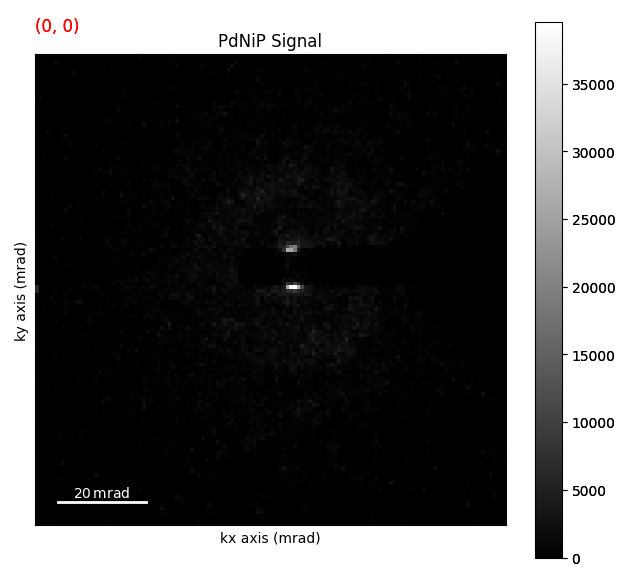
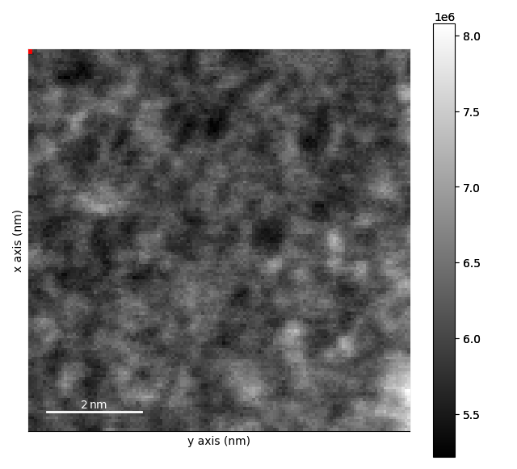

Note
Go to the end to download the full example code.
Flat Ewald’s Sphere Assumption#
In most cases, the Ewald’s sphere is assumed to be flat for diffraction patterns when doing 4D STEM. This is almost always a good assumption. That being said there are a couple of common units used with 4D STEM (e.g. nm-1, mrad, pixel coordinates) and it is important to understand how these units relate to each other. These units are also related to the camera length, pixel size, and beam energy (wavelength) of the microscope. In reality the beam energy is really the only thing that you need to know.
Let’s look at an example of this using the ZrNb Precipitate dataset.
from pyxem.data import pdnip_glass
g = pdnip_glass(allow_download=True)
g.calibration.beam_energy = "200 kV"
g.calibration.convergance_angle = "1 mrad" # set the convergence angle
0%| | 0.00/305M [00:00<?, ?B/s]
0%| | 4.10k/305M [00:00<2:41:11, 31.5kB/s]
0%| | 32.8k/305M [00:00<35:44, 142kB/s]
0%| | 106k/305M [00:00<15:11, 334kB/s]
0%| | 180k/305M [00:00<11:57, 424kB/s]
0%| | 238k/305M [00:00<11:54, 426kB/s]
0%| | 336k/305M [00:00<09:30, 533kB/s]
0%| | 401k/305M [00:00<09:42, 522kB/s]
0%| | 467k/305M [00:01<09:54, 512kB/s]
0%| | 532k/305M [00:01<09:58, 508kB/s]
0%| | 614k/305M [00:01<09:20, 543kB/s]
0%| | 713k/305M [00:01<08:22, 605kB/s]
0%| | 795k/305M [00:01<08:16, 612kB/s]
0%| | 893k/305M [00:01<07:44, 653kB/s]
0%|▏ | 1.02M/305M [00:01<06:42, 754kB/s]
0%|▏ | 1.11M/305M [00:01<07:04, 714kB/s]
0%|▏ | 1.18M/305M [00:02<07:36, 665kB/s]
0%|▏ | 1.25M/305M [00:02<08:05, 624kB/s]
0%|▏ | 1.40M/305M [00:02<06:27, 783kB/s]
1%|▏ | 1.53M/305M [00:02<06:03, 834kB/s]
1%|▏ | 1.68M/305M [00:02<05:30, 918kB/s]
1%|▏ | 1.82M/305M [00:02<05:12, 969kB/s]
1%|▏ | 1.94M/305M [00:02<05:23, 936kB/s]
1%|▎ | 2.04M/305M [00:03<05:43, 880kB/s]
1%|▎ | 2.17M/305M [00:03<05:30, 914kB/s]
1%|▎ | 2.26M/305M [00:03<05:53, 856kB/s]
1%|▎ | 2.35M/305M [00:03<06:20, 795kB/s]
1%|▎ | 2.49M/305M [00:03<05:41, 885kB/s]
1%|▎ | 2.61M/305M [00:03<05:43, 880kB/s]
1%|▎ | 2.71M/305M [00:03<05:59, 841kB/s]
1%|▎ | 2.84M/305M [00:03<05:40, 886kB/s]
1%|▎ | 2.93M/305M [00:04<06:05, 825kB/s]
1%|▍ | 3.04M/305M [00:04<06:07, 820kB/s]
1%|▍ | 3.12M/305M [00:04<06:31, 771kB/s]
1%|▍ | 3.26M/305M [00:04<05:49, 862kB/s]
1%|▍ | 3.38M/305M [00:04<05:48, 864kB/s]
1%|▍ | 3.49M/305M [00:04<05:48, 865kB/s]
1%|▍ | 3.69M/305M [00:04<04:46, 1.05MB/s]
1%|▍ | 3.80M/305M [00:05<05:06, 980kB/s]
1%|▍ | 3.90M/305M [00:05<05:30, 910kB/s]
1%|▌ | 3.99M/305M [00:05<05:52, 852kB/s]
1%|▌ | 4.08M/305M [00:05<06:14, 802kB/s]
1%|▌ | 4.28M/305M [00:05<04:57, 1.01MB/s]
1%|▌ | 4.38M/305M [00:05<05:19, 941kB/s]
1%|▌ | 4.49M/305M [00:05<05:29, 912kB/s]
2%|▌ | 4.58M/305M [00:05<05:51, 853kB/s]
2%|▌ | 4.72M/305M [00:06<05:31, 906kB/s]
2%|▌ | 4.81M/305M [00:06<05:53, 849kB/s]
2%|▋ | 4.90M/305M [00:06<06:19, 791kB/s]
2%|▋ | 5.01M/305M [00:06<06:07, 814kB/s]
2%|▋ | 5.11M/305M [00:06<06:17, 794kB/s]
2%|▋ | 5.19M/305M [00:06<06:42, 743kB/s]
2%|▋ | 5.32M/305M [00:06<06:05, 819kB/s]
2%|▋ | 5.42M/305M [00:06<06:15, 798kB/s]
2%|▋ | 5.62M/305M [00:07<04:57, 1.01MB/s]
2%|▋ | 5.73M/305M [00:07<05:10, 962kB/s]
2%|▋ | 5.88M/305M [00:07<04:56, 1.01MB/s]
2%|▊ | 5.99M/305M [00:07<05:11, 957kB/s]
2%|▊ | 6.12M/305M [00:07<05:07, 970kB/s]
2%|▊ | 6.34M/305M [00:07<04:17, 1.16MB/s]
2%|▊ | 6.53M/305M [00:07<03:56, 1.26MB/s]
2%|▊ | 6.75M/305M [00:08<03:38, 1.36MB/s]
2%|▊ | 6.89M/305M [00:08<03:54, 1.27MB/s]
2%|▉ | 7.02M/305M [00:08<04:10, 1.19MB/s]
2%|▉ | 7.14M/305M [00:08<04:29, 1.10MB/s]
2%|▉ | 7.25M/305M [00:08<04:53, 1.01MB/s]
2%|▉ | 7.35M/305M [00:08<05:14, 944kB/s]
2%|▉ | 7.45M/305M [00:08<05:35, 886kB/s]
2%|▉ | 7.54M/305M [00:08<05:59, 826kB/s]
3%|▉ | 7.73M/305M [00:09<04:52, 1.02MB/s]
3%|▉ | 7.96M/305M [00:09<04:00, 1.23MB/s]
3%|█ | 8.09M/305M [00:09<04:17, 1.15MB/s]
3%|█ | 8.20M/305M [00:09<04:34, 1.08MB/s]
3%|█ | 8.31M/305M [00:09<04:55, 1.00MB/s]
3%|█ | 8.53M/305M [00:09<04:09, 1.19MB/s]
3%|█ | 8.69M/305M [00:09<04:05, 1.21MB/s]
3%|█ | 8.84M/305M [00:10<04:10, 1.18MB/s]
3%|█ | 8.96M/305M [00:10<04:29, 1.10MB/s]
3%|█▏ | 9.07M/305M [00:10<04:50, 1.02MB/s]
3%|█▏ | 9.17M/305M [00:10<05:11, 948kB/s]
3%|█▏ | 9.28M/305M [00:10<05:22, 916kB/s]
3%|█▏ | 9.51M/305M [00:10<04:13, 1.17MB/s]
3%|█▏ | 9.63M/305M [00:10<04:31, 1.09MB/s]
3%|█▏ | 9.74M/305M [00:10<04:50, 1.01MB/s]
3%|█▎ | 9.84M/305M [00:11<05:13, 941kB/s]
3%|█▎ | 9.95M/305M [00:11<05:23, 912kB/s]
3%|█▎ | 10.1M/305M [00:11<05:02, 974kB/s]
3%|█▎ | 10.3M/305M [00:11<04:31, 1.08MB/s]
3%|█▎ | 10.4M/305M [00:11<04:51, 1.01MB/s]
3%|█▎ | 10.5M/305M [00:11<05:12, 942kB/s]
3%|█▎ | 10.6M/305M [00:11<05:34, 880kB/s]
4%|█▎ | 10.7M/305M [00:12<05:57, 822kB/s]
4%|█▍ | 10.8M/305M [00:12<05:58, 819kB/s]
4%|█▍ | 10.9M/305M [00:12<06:08, 797kB/s]
4%|█▍ | 11.0M/305M [00:12<06:15, 782kB/s]
4%|█▍ | 11.1M/305M [00:12<05:32, 883kB/s]
4%|█▍ | 11.3M/305M [00:12<04:25, 1.10MB/s]
4%|█▍ | 11.5M/305M [00:12<04:24, 1.11MB/s]
4%|█▍ | 11.6M/305M [00:12<04:32, 1.08MB/s]
4%|█▍ | 11.7M/305M [00:13<04:48, 1.02MB/s]
4%|█▍ | 11.9M/305M [00:13<04:50, 1.01MB/s]
4%|█▌ | 12.0M/305M [00:13<05:11, 939kB/s]
4%|█▌ | 12.1M/305M [00:13<05:35, 872kB/s]
4%|█▌ | 12.2M/305M [00:13<05:51, 833kB/s]
4%|█▌ | 12.3M/305M [00:13<05:21, 909kB/s]
4%|█▌ | 12.4M/305M [00:13<05:39, 861kB/s]
4%|█▌ | 12.5M/305M [00:13<05:37, 865kB/s]
4%|█▌ | 12.7M/305M [00:14<04:27, 1.09MB/s]
4%|█▌ | 12.8M/305M [00:14<04:47, 1.02MB/s]
4%|█▋ | 12.9M/305M [00:14<05:08, 944kB/s]
4%|█▋ | 13.1M/305M [00:14<06:41, 725kB/s]
4%|█▋ | 13.2M/305M [00:14<06:55, 702kB/s]
4%|█▋ | 13.3M/305M [00:14<07:12, 674kB/s]
4%|█▋ | 13.4M/305M [00:15<06:55, 700kB/s]
4%|█▋ | 13.5M/305M [00:15<06:53, 704kB/s]
4%|█▋ | 13.6M/305M [00:15<06:41, 725kB/s]
4%|█▊ | 13.7M/305M [00:15<06:19, 767kB/s]
5%|█▊ | 13.8M/305M [00:15<05:49, 833kB/s]
5%|█▊ | 13.9M/305M [00:15<06:12, 781kB/s]
5%|█▊ | 14.0M/305M [00:15<06:03, 798kB/s]
5%|█▊ | 14.2M/305M [00:16<05:25, 894kB/s]
5%|█▊ | 14.3M/305M [00:16<04:50, 999kB/s]
5%|█▊ | 14.4M/305M [00:16<05:02, 961kB/s]
5%|█▊ | 14.5M/305M [00:16<05:23, 897kB/s]
5%|█▊ | 14.6M/305M [00:16<05:39, 853kB/s]
5%|█▉ | 14.7M/305M [00:16<05:53, 821kB/s]
5%|█▉ | 14.8M/305M [00:16<06:02, 800kB/s]
5%|█▉ | 15.0M/305M [00:16<05:23, 895kB/s]
5%|█▉ | 15.1M/305M [00:17<05:44, 842kB/s]
5%|█▉ | 15.2M/305M [00:17<05:55, 814kB/s]
5%|█▉ | 15.3M/305M [00:17<06:04, 793kB/s]
5%|█▉ | 15.4M/305M [00:17<06:29, 742kB/s]
5%|█▉ | 15.5M/305M [00:17<05:52, 819kB/s]
5%|█▉ | 15.6M/305M [00:17<05:46, 834kB/s]
5%|██ | 15.7M/305M [00:17<06:10, 779kB/s]
5%|██ | 15.8M/305M [00:17<06:34, 732kB/s]
5%|██ | 15.9M/305M [00:18<05:44, 838kB/s]
5%|██ | 16.0M/305M [00:18<06:08, 783kB/s]
5%|██ | 16.2M/305M [00:18<05:16, 912kB/s]
5%|██ | 16.3M/305M [00:18<04:55, 974kB/s]
5%|██ | 16.5M/305M [00:18<04:32, 1.06MB/s]
5%|██ | 16.6M/305M [00:18<04:47, 1.00MB/s]
5%|██▏ | 16.7M/305M [00:18<05:08, 935kB/s]
6%|██▏ | 16.8M/305M [00:19<05:17, 907kB/s]
6%|██▏ | 16.9M/305M [00:19<05:36, 855kB/s]
6%|██▏ | 17.0M/305M [00:19<06:01, 795kB/s]
6%|██▏ | 17.1M/305M [00:19<06:26, 744kB/s]
6%|██▏ | 17.1M/305M [00:19<06:51, 698kB/s]
6%|██▏ | 17.3M/305M [00:19<06:09, 778kB/s]
6%|██▏ | 17.4M/305M [00:19<06:13, 769kB/s]
6%|██▏ | 17.5M/305M [00:19<05:42, 838kB/s]
6%|██▎ | 17.6M/305M [00:20<05:24, 886kB/s]
6%|██▎ | 17.7M/305M [00:20<05:39, 845kB/s]
6%|██▎ | 17.9M/305M [00:20<05:09, 927kB/s]
6%|██▎ | 18.1M/305M [00:20<04:21, 1.10MB/s]
6%|██▎ | 18.3M/305M [00:20<03:48, 1.25MB/s]
6%|██▎ | 18.4M/305M [00:20<03:48, 1.25MB/s]
6%|██▎ | 18.6M/305M [00:20<04:05, 1.16MB/s]
6%|██▎ | 18.7M/305M [00:21<04:23, 1.09MB/s]
6%|██▎ | 18.8M/305M [00:21<04:42, 1.01MB/s]
6%|██▍ | 18.9M/305M [00:21<05:03, 943kB/s]
6%|██▍ | 19.1M/305M [00:21<04:17, 1.11MB/s]
6%|██▍ | 19.3M/305M [00:21<04:16, 1.11MB/s]
6%|██▍ | 19.4M/305M [00:21<04:09, 1.14MB/s]
6%|██▍ | 19.5M/305M [00:21<04:31, 1.05MB/s]
6%|██▍ | 19.7M/305M [00:21<04:35, 1.04MB/s]
7%|██▍ | 19.8M/305M [00:22<04:28, 1.06MB/s]
7%|██▌ | 19.9M/305M [00:22<04:48, 986kB/s]
7%|██▌ | 20.0M/305M [00:22<04:42, 1.01MB/s]
7%|██▌ | 20.3M/305M [00:22<03:58, 1.19MB/s]
7%|██▌ | 20.4M/305M [00:22<04:15, 1.11MB/s]
7%|██▌ | 20.5M/305M [00:22<04:32, 1.04MB/s]
7%|██▌ | 20.7M/305M [00:22<04:04, 1.16MB/s]
7%|██▌ | 20.8M/305M [00:22<04:22, 1.08MB/s]
7%|██▌ | 20.9M/305M [00:23<04:40, 1.01MB/s]
7%|██▋ | 21.1M/305M [00:23<04:05, 1.15MB/s]
7%|██▋ | 21.3M/305M [00:23<03:39, 1.29MB/s]
7%|██▋ | 21.5M/305M [00:23<03:55, 1.20MB/s]
7%|██▋ | 21.6M/305M [00:23<04:12, 1.12MB/s]
7%|██▋ | 21.7M/305M [00:23<04:30, 1.05MB/s]
7%|██▊ | 21.8M/305M [00:23<04:49, 976kB/s]
7%|██▊ | 21.9M/305M [00:24<05:11, 906kB/s]
7%|██▊ | 22.0M/305M [00:24<05:32, 850kB/s]
7%|██▊ | 22.1M/305M [00:24<05:57, 791kB/s]
7%|██▊ | 22.2M/305M [00:24<06:21, 741kB/s]
7%|██▊ | 22.2M/305M [00:24<06:45, 697kB/s]
7%|██▊ | 22.3M/305M [00:24<06:57, 676kB/s]
7%|██▊ | 22.4M/305M [00:24<07:26, 632kB/s]
7%|██▉ | 22.5M/305M [00:24<06:46, 695kB/s]
7%|██▊ | 22.7M/305M [00:25<04:29, 1.05MB/s]
8%|██▉ | 22.9M/305M [00:25<04:43, 994kB/s]
8%|██▉ | 23.0M/305M [00:25<05:02, 930kB/s]
8%|██▉ | 23.2M/305M [00:25<04:09, 1.13MB/s]
8%|██▉ | 23.3M/305M [00:25<04:27, 1.05MB/s]
8%|██▉ | 23.4M/305M [00:25<04:47, 978kB/s]
8%|███ | 23.5M/305M [00:25<05:09, 909kB/s]
8%|███ | 23.6M/305M [00:26<05:22, 871kB/s]
8%|███ | 23.7M/305M [00:26<05:44, 815kB/s]
8%|███ | 23.8M/305M [00:26<05:29, 851kB/s]
8%|███ | 23.9M/305M [00:26<05:27, 858kB/s]
8%|███ | 24.0M/305M [00:26<05:40, 825kB/s]
8%|███ | 24.2M/305M [00:26<04:33, 1.03MB/s]
8%|███ | 24.3M/305M [00:26<04:52, 959kB/s]
8%|███▏ | 24.4M/305M [00:26<05:12, 896kB/s]
8%|███▏ | 24.5M/305M [00:27<05:36, 833kB/s]
8%|███▏ | 24.7M/305M [00:27<05:04, 919kB/s]
8%|███ | 24.9M/305M [00:27<04:16, 1.09MB/s]
8%|███ | 25.0M/305M [00:27<04:06, 1.14MB/s]
8%|███▏ | 25.1M/305M [00:27<04:24, 1.06MB/s]
8%|███▏ | 25.2M/305M [00:27<04:44, 981kB/s]
8%|███▏ | 25.4M/305M [00:27<04:37, 1.01MB/s]
8%|███▎ | 25.5M/305M [00:27<04:57, 938kB/s]
8%|███▏ | 25.7M/305M [00:28<04:26, 1.05MB/s]
8%|███▎ | 25.8M/305M [00:28<04:45, 976kB/s]
8%|███▎ | 25.9M/305M [00:28<05:07, 908kB/s]
9%|███▎ | 26.0M/305M [00:28<05:27, 851kB/s]
9%|███▎ | 26.1M/305M [00:28<05:43, 811kB/s]
9%|███▎ | 26.3M/305M [00:28<04:06, 1.13MB/s]
9%|███▎ | 26.4M/305M [00:28<04:25, 1.05MB/s]
9%|███▍ | 26.5M/305M [00:29<04:44, 976kB/s]
9%|███▎ | 26.7M/305M [00:29<04:01, 1.15MB/s]
9%|███▎ | 26.8M/305M [00:29<04:17, 1.08MB/s]
9%|███▎ | 27.0M/305M [00:29<04:36, 1.00MB/s]
9%|███▍ | 27.1M/305M [00:29<04:37, 1.00MB/s]
9%|███▍ | 27.2M/305M [00:29<04:56, 935kB/s]
9%|███▍ | 27.3M/305M [00:29<04:42, 982kB/s]
9%|███▌ | 27.5M/305M [00:29<04:40, 986kB/s]
9%|███▍ | 27.7M/305M [00:30<03:41, 1.25MB/s]
9%|███▍ | 27.9M/305M [00:30<03:24, 1.35MB/s]
9%|███▍ | 28.0M/305M [00:30<03:40, 1.25MB/s]
9%|███▌ | 28.2M/305M [00:30<03:56, 1.17MB/s]
9%|███▌ | 28.3M/305M [00:30<04:14, 1.09MB/s]
9%|███▌ | 28.5M/305M [00:30<04:05, 1.13MB/s]
9%|███▌ | 28.6M/305M [00:30<04:13, 1.09MB/s]
9%|███▌ | 28.7M/305M [00:31<04:29, 1.02MB/s]
9%|███▌ | 28.9M/305M [00:31<03:49, 1.20MB/s]
10%|███▌ | 29.0M/305M [00:31<04:05, 1.12MB/s]
10%|███▋ | 29.2M/305M [00:31<04:23, 1.05MB/s]
10%|███▋ | 29.3M/305M [00:31<04:42, 976kB/s]
10%|███▊ | 29.4M/305M [00:31<04:51, 945kB/s]
10%|███▊ | 29.5M/305M [00:31<05:10, 886kB/s]
10%|███▊ | 29.6M/305M [00:31<05:11, 883kB/s]
10%|███▊ | 29.7M/305M [00:32<05:26, 841kB/s]
10%|███▋ | 29.9M/305M [00:32<04:17, 1.07MB/s]
10%|███▋ | 30.0M/305M [00:32<04:13, 1.08MB/s]
10%|███▊ | 30.2M/305M [00:32<04:32, 1.01MB/s]
10%|███▊ | 30.3M/305M [00:32<04:51, 941kB/s]
10%|███▊ | 30.4M/305M [00:32<04:16, 1.07MB/s]
10%|███▊ | 30.6M/305M [00:32<04:12, 1.08MB/s]
10%|███▊ | 30.7M/305M [00:32<04:30, 1.01MB/s]
10%|███▉ | 30.8M/305M [00:33<04:50, 941kB/s]
10%|███▉ | 30.9M/305M [00:33<05:13, 874kB/s]
10%|███▉ | 31.0M/305M [00:33<04:56, 921kB/s]
10%|███▉ | 31.1M/305M [00:33<05:14, 869kB/s]
10%|███▉ | 31.2M/305M [00:33<05:28, 832kB/s]
10%|████ | 31.3M/305M [00:33<05:38, 808kB/s]
10%|████ | 31.4M/305M [00:33<06:03, 752kB/s]
10%|████ | 31.5M/305M [00:34<06:04, 750kB/s]
10%|████ | 31.6M/305M [00:34<06:04, 750kB/s]
10%|███▉ | 31.8M/305M [00:34<04:11, 1.08MB/s]
11%|████ | 32.2M/305M [00:34<02:41, 1.68MB/s]
11%|████ | 32.4M/305M [00:34<03:45, 1.21MB/s]
11%|████ | 32.6M/305M [00:34<03:52, 1.17MB/s]
11%|████▏ | 32.7M/305M [00:35<05:04, 893kB/s]
11%|████▏ | 32.8M/305M [00:35<05:11, 873kB/s]
11%|████▏ | 32.9M/305M [00:35<05:22, 843kB/s]
11%|████▏ | 33.0M/305M [00:35<05:35, 810kB/s]
11%|████▏ | 33.1M/305M [00:35<05:18, 851kB/s]
11%|████▎ | 33.3M/305M [00:35<04:52, 927kB/s]
11%|████▏ | 33.5M/305M [00:35<03:46, 1.19MB/s]
11%|████▏ | 33.7M/305M [00:36<03:50, 1.17MB/s]
11%|████▏ | 33.8M/305M [00:36<04:05, 1.10MB/s]
11%|████▎ | 33.9M/305M [00:36<05:33, 813kB/s]
11%|████▎ | 34.0M/305M [00:36<05:43, 788kB/s]
11%|████▎ | 34.1M/305M [00:36<05:59, 753kB/s]
11%|████▍ | 34.2M/305M [00:36<05:16, 854kB/s]
11%|████▎ | 34.4M/305M [00:36<04:17, 1.05MB/s]
11%|████▎ | 34.6M/305M [00:37<04:22, 1.03MB/s]
11%|████▎ | 34.7M/305M [00:37<04:24, 1.02MB/s]
11%|████▍ | 34.8M/305M [00:37<04:36, 976kB/s]
11%|████▍ | 34.9M/305M [00:37<04:53, 918kB/s]
11%|████▍ | 35.0M/305M [00:37<05:04, 886kB/s]
12%|████▍ | 35.1M/305M [00:37<05:05, 882kB/s]
12%|████▌ | 35.2M/305M [00:37<05:19, 843kB/s]
12%|████▌ | 35.3M/305M [00:37<05:31, 814kB/s]
12%|████▌ | 35.4M/305M [00:38<05:23, 831kB/s]
12%|████▍ | 35.7M/305M [00:38<04:12, 1.07MB/s]
12%|████▍ | 35.9M/305M [00:38<03:38, 1.23MB/s]
12%|████▌ | 36.1M/305M [00:38<03:19, 1.35MB/s]
12%|████▌ | 36.3M/305M [00:38<03:13, 1.39MB/s]
12%|████▌ | 36.4M/305M [00:38<03:27, 1.29MB/s]
12%|████▌ | 36.5M/305M [00:38<03:43, 1.20MB/s]
12%|████▌ | 36.7M/305M [00:39<03:58, 1.12MB/s]
12%|████▌ | 36.8M/305M [00:39<04:15, 1.05MB/s]
12%|████▋ | 36.9M/305M [00:39<04:34, 976kB/s]
12%|████▋ | 37.0M/305M [00:39<04:54, 908kB/s]
12%|████▊ | 37.1M/305M [00:39<04:52, 916kB/s]
12%|████▊ | 37.2M/305M [00:39<05:12, 856kB/s]
12%|████▊ | 37.4M/305M [00:39<04:45, 936kB/s]
12%|████▊ | 37.4M/305M [00:39<05:04, 879kB/s]
12%|████▊ | 37.6M/305M [00:40<05:04, 876kB/s]
12%|████▋ | 37.8M/305M [00:40<04:03, 1.10MB/s]
12%|████▋ | 37.9M/305M [00:40<04:21, 1.02MB/s]
12%|████▊ | 38.0M/305M [00:40<04:41, 948kB/s]
13%|████▉ | 38.1M/305M [00:40<04:48, 925kB/s]
13%|████▉ | 38.2M/305M [00:40<04:42, 944kB/s]
13%|████▉ | 38.3M/305M [00:40<05:00, 885kB/s]
13%|████▉ | 38.4M/305M [00:41<05:15, 843kB/s]
13%|████▉ | 38.6M/305M [00:41<04:47, 926kB/s]
13%|████▊ | 38.8M/305M [00:41<04:02, 1.10MB/s]
13%|████▊ | 38.9M/305M [00:41<03:52, 1.14MB/s]
13%|████▊ | 39.1M/305M [00:41<04:10, 1.06MB/s]
13%|████▉ | 39.2M/305M [00:41<04:15, 1.04MB/s]
13%|█████ | 39.3M/305M [00:41<04:33, 971kB/s]
13%|█████ | 39.4M/305M [00:41<04:50, 913kB/s]
13%|█████ | 39.5M/305M [00:42<05:06, 864kB/s]
13%|█████ | 39.6M/305M [00:42<05:19, 829kB/s]
13%|████▉ | 39.8M/305M [00:42<04:17, 1.03MB/s]
13%|████▉ | 40.0M/305M [00:42<03:46, 1.17MB/s]
13%|█████ | 40.1M/305M [00:42<04:03, 1.09MB/s]
13%|█████ | 40.2M/305M [00:42<04:11, 1.05MB/s]
13%|█████ | 40.4M/305M [00:42<03:36, 1.22MB/s]
13%|█████ | 40.6M/305M [00:42<03:41, 1.19MB/s]
13%|█████ | 40.7M/305M [00:43<03:53, 1.13MB/s]
13%|█████ | 40.9M/305M [00:43<03:46, 1.16MB/s]
13%|█████ | 41.0M/305M [00:43<04:03, 1.08MB/s]
13%|█████▏ | 41.1M/305M [00:43<04:20, 1.01MB/s]
14%|█████▎ | 41.2M/305M [00:43<04:39, 942kB/s]
14%|█████▎ | 41.4M/305M [00:43<04:29, 976kB/s]
14%|█████▎ | 41.5M/305M [00:43<04:28, 982kB/s]
14%|█████▎ | 41.6M/305M [00:44<04:48, 912kB/s]
14%|█████▎ | 41.7M/305M [00:44<04:40, 936kB/s]
14%|█████▎ | 41.8M/305M [00:44<04:58, 880kB/s]
14%|█████▎ | 42.0M/305M [00:44<04:36, 951kB/s]
14%|█████▍ | 42.1M/305M [00:44<04:54, 890kB/s]
14%|█████▍ | 42.2M/305M [00:44<05:09, 848kB/s]
14%|█████▍ | 42.3M/305M [00:44<05:21, 816kB/s]
14%|█████▍ | 42.4M/305M [00:44<05:29, 796kB/s]
14%|█████▎ | 42.6M/305M [00:45<04:21, 1.00MB/s]
14%|█████▍ | 42.7M/305M [00:45<05:24, 807kB/s]
14%|█████▍ | 42.7M/305M [00:45<05:41, 766kB/s]
14%|█████▍ | 42.8M/305M [00:45<06:00, 726kB/s]
14%|█████▍ | 42.9M/305M [00:45<05:48, 750kB/s]
14%|█████▌ | 43.1M/305M [00:45<04:25, 984kB/s]
14%|█████▌ | 43.2M/305M [00:45<04:43, 923kB/s]
14%|█████▌ | 43.3M/305M [00:46<04:50, 899kB/s]
14%|█████▍ | 43.5M/305M [00:46<04:20, 1.00MB/s]
14%|█████▍ | 43.8M/305M [00:46<03:29, 1.25MB/s]
14%|█████▍ | 44.0M/305M [00:46<03:11, 1.36MB/s]
14%|█████▌ | 44.1M/305M [00:46<03:25, 1.27MB/s]
15%|█████▌ | 44.2M/305M [00:46<03:39, 1.19MB/s]
15%|█████▌ | 44.4M/305M [00:46<03:54, 1.11MB/s]
15%|█████▌ | 44.5M/305M [00:47<04:09, 1.04MB/s]
15%|█████▋ | 44.6M/305M [00:47<04:27, 971kB/s]
15%|█████▋ | 44.7M/305M [00:47<04:47, 905kB/s]
15%|█████▋ | 44.8M/305M [00:47<04:56, 877kB/s]
15%|█████▌ | 45.0M/305M [00:47<03:41, 1.17MB/s]
15%|█████▋ | 45.2M/305M [00:47<03:44, 1.16MB/s]
15%|█████▋ | 45.3M/305M [00:47<03:46, 1.15MB/s]
15%|█████▋ | 45.4M/305M [00:47<04:04, 1.06MB/s]
15%|█████▋ | 45.6M/305M [00:48<04:00, 1.08MB/s]
15%|█████▋ | 45.8M/305M [00:48<03:18, 1.31MB/s]
15%|█████▋ | 46.0M/305M [00:48<03:33, 1.21MB/s]
15%|█████▊ | 46.1M/305M [00:48<03:25, 1.26MB/s]
15%|█████▊ | 46.3M/305M [00:48<03:39, 1.18MB/s]
15%|█████▊ | 46.4M/305M [00:48<03:57, 1.09MB/s]
15%|█████▊ | 46.5M/305M [00:48<04:15, 1.01MB/s]
15%|█████▉ | 46.6M/305M [00:48<04:33, 942kB/s]
15%|█████▊ | 46.8M/305M [00:49<04:12, 1.02MB/s]
15%|██████ | 46.9M/305M [00:49<04:31, 950kB/s]
15%|██████ | 47.0M/305M [00:49<04:51, 884kB/s]
15%|██████ | 47.1M/305M [00:49<05:14, 819kB/s]
15%|██████ | 47.2M/305M [00:49<04:43, 908kB/s]
16%|█████▉ | 47.4M/305M [00:49<03:50, 1.12MB/s]
16%|█████▉ | 47.5M/305M [00:49<04:06, 1.04MB/s]
16%|██████ | 47.6M/305M [00:50<04:24, 973kB/s]
16%|█████▉ | 47.8M/305M [00:50<04:01, 1.06MB/s]
16%|█████▉ | 47.9M/305M [00:50<04:06, 1.04MB/s]
16%|██████▏ | 48.1M/305M [00:50<04:18, 991kB/s]
16%|██████ | 48.2M/305M [00:50<04:09, 1.03MB/s]
16%|██████ | 48.3M/305M [00:50<04:11, 1.02MB/s]
16%|██████▏ | 48.4M/305M [00:50<04:22, 975kB/s]
16%|██████▏ | 48.5M/305M [00:50<04:42, 905kB/s]
16%|██████▏ | 48.6M/305M [00:51<05:01, 849kB/s]
16%|██████▏ | 48.7M/305M [00:51<05:23, 791kB/s]
16%|██████▏ | 48.8M/305M [00:51<05:45, 741kB/s]
16%|██████▎ | 48.9M/305M [00:51<05:12, 818kB/s]
16%|██████▎ | 49.1M/305M [00:51<05:06, 833kB/s]
16%|██████▎ | 49.2M/305M [00:51<04:26, 958kB/s]
16%|██████▏ | 49.4M/305M [00:51<03:56, 1.08MB/s]
16%|██████▏ | 49.5M/305M [00:52<04:13, 1.01MB/s]
16%|██████▎ | 49.6M/305M [00:52<04:31, 940kB/s]
16%|██████▎ | 49.7M/305M [00:52<04:52, 873kB/s]
16%|██████▍ | 49.8M/305M [00:52<05:11, 817kB/s]
16%|██████▏ | 50.0M/305M [00:52<03:56, 1.08MB/s]
16%|██████▎ | 50.1M/305M [00:52<04:13, 1.00MB/s]
16%|██████▍ | 50.2M/305M [00:52<04:31, 936kB/s]
17%|██████▍ | 50.4M/305M [00:52<04:26, 955kB/s]
17%|██████▎ | 50.6M/305M [00:53<03:47, 1.12MB/s]
17%|██████▎ | 50.7M/305M [00:53<03:55, 1.08MB/s]
17%|██████▎ | 50.8M/305M [00:53<04:09, 1.02MB/s]
17%|██████▎ | 51.0M/305M [00:53<03:38, 1.16MB/s]
17%|██████▍ | 51.1M/305M [00:53<03:53, 1.08MB/s]
17%|██████▍ | 51.2M/305M [00:53<04:10, 1.01MB/s]
17%|██████▌ | 51.3M/305M [00:53<04:21, 969kB/s]
17%|██████▌ | 51.4M/305M [00:54<04:40, 903kB/s]
17%|██████▌ | 51.6M/305M [00:54<04:21, 968kB/s]
17%|██████▍ | 51.8M/305M [00:54<03:24, 1.24MB/s]
17%|██████▍ | 52.0M/305M [00:54<03:38, 1.16MB/s]
17%|██████▍ | 52.1M/305M [00:54<03:53, 1.08MB/s]
17%|██████▌ | 52.2M/305M [00:54<04:01, 1.05MB/s]
17%|██████▋ | 52.3M/305M [00:54<04:18, 975kB/s]
17%|██████▋ | 52.4M/305M [00:54<04:37, 908kB/s]
17%|██████▋ | 52.5M/305M [00:55<04:56, 850kB/s]
17%|██████▋ | 52.6M/305M [00:55<05:11, 810kB/s]
17%|██████▋ | 52.7M/305M [00:55<05:18, 792kB/s]
17%|██████▊ | 52.8M/305M [00:55<04:54, 854kB/s]
17%|██████▌ | 53.0M/305M [00:55<03:52, 1.08MB/s]
17%|██████▋ | 53.2M/305M [00:55<04:09, 1.01MB/s]
17%|██████▊ | 53.3M/305M [00:55<04:27, 941kB/s]
18%|██████▊ | 53.4M/305M [00:55<04:48, 869kB/s]
18%|██████▊ | 53.4M/305M [00:56<05:08, 815kB/s]
18%|██████▋ | 53.6M/305M [00:56<04:00, 1.05MB/s]
18%|██████▋ | 53.8M/305M [00:56<03:46, 1.11MB/s]
18%|██████▋ | 53.9M/305M [00:56<04:05, 1.02MB/s]
18%|██████▋ | 54.1M/305M [00:56<04:05, 1.02MB/s]
18%|██████▉ | 54.2M/305M [00:56<04:24, 947kB/s]
18%|██████▉ | 54.3M/305M [00:56<04:39, 895kB/s]
18%|██████▉ | 54.4M/305M [00:57<04:54, 850kB/s]
18%|██████▉ | 54.5M/305M [00:57<05:16, 791kB/s]
18%|██████▉ | 54.5M/305M [00:57<05:37, 742kB/s]
18%|███████ | 54.7M/305M [00:57<04:55, 846kB/s]
18%|██████▊ | 54.9M/305M [00:57<03:51, 1.08MB/s]
18%|██████▊ | 55.1M/305M [00:57<03:22, 1.24MB/s]
18%|███████ | 55.2M/305M [00:58<07:20, 566kB/s]
18%|███████ | 55.4M/305M [00:58<06:37, 627kB/s]
18%|███████ | 55.5M/305M [00:58<05:59, 694kB/s]
18%|███████ | 55.6M/305M [00:58<05:46, 719kB/s]
18%|███████▏ | 55.7M/305M [00:58<05:50, 711kB/s]
18%|███████▏ | 55.8M/305M [00:58<05:24, 768kB/s]
18%|███████▏ | 55.9M/305M [00:59<05:33, 745kB/s]
18%|███████▏ | 56.0M/305M [00:59<05:49, 711kB/s]
18%|███████▏ | 56.1M/305M [00:59<04:54, 845kB/s]
18%|███████▏ | 56.3M/305M [00:59<04:28, 923kB/s]
19%|███████▏ | 56.4M/305M [00:59<04:44, 872kB/s]
19%|███████▏ | 56.5M/305M [00:59<05:03, 817kB/s]
19%|███████▏ | 56.5M/305M [00:59<05:22, 769kB/s]
19%|███████ | 56.8M/305M [01:00<04:00, 1.03MB/s]
19%|███████ | 56.9M/305M [01:00<04:02, 1.02MB/s]
19%|███████▎ | 57.0M/305M [01:00<04:18, 957kB/s]
19%|███████▎ | 57.1M/305M [01:00<04:10, 987kB/s]
19%|███████▎ | 57.3M/305M [01:00<04:09, 990kB/s]
19%|███████▎ | 57.4M/305M [01:00<04:21, 947kB/s]
19%|███████▏ | 57.6M/305M [01:00<03:58, 1.03MB/s]
19%|███████▍ | 57.7M/305M [01:00<04:15, 968kB/s]
19%|███████▍ | 57.8M/305M [01:01<04:33, 902kB/s]
19%|███████▍ | 57.9M/305M [01:01<04:33, 902kB/s]
19%|███████▍ | 58.0M/305M [01:01<04:51, 846kB/s]
19%|███████▍ | 58.1M/305M [01:01<04:23, 936kB/s]
19%|███████▍ | 58.2M/305M [01:01<04:28, 917kB/s]
19%|███████▍ | 58.4M/305M [01:01<04:21, 940kB/s]
19%|███████▍ | 58.5M/305M [01:01<04:39, 881kB/s]
19%|███████▍ | 58.6M/305M [01:01<04:59, 822kB/s]
19%|███████▌ | 58.7M/305M [01:02<05:00, 819kB/s]
19%|███████▌ | 58.7M/305M [01:02<05:23, 760kB/s]
19%|███████▌ | 58.9M/305M [01:02<05:09, 794kB/s]
19%|███████▌ | 59.0M/305M [01:02<04:47, 855kB/s]
19%|███████▌ | 59.1M/305M [01:02<04:58, 823kB/s]
19%|███████▌ | 59.2M/305M [01:02<04:53, 837kB/s]
19%|███████▌ | 59.3M/305M [01:02<04:49, 847kB/s]
20%|███████▌ | 59.4M/305M [01:03<05:00, 816kB/s]
20%|███████▋ | 59.6M/305M [01:03<04:19, 945kB/s]
20%|███████▍ | 59.8M/305M [01:03<03:50, 1.06MB/s]
20%|███████▍ | 59.9M/305M [01:03<04:03, 1.00MB/s]
20%|███████▍ | 60.0M/305M [01:03<04:03, 1.00MB/s]
20%|███████▋ | 60.1M/305M [01:03<04:21, 935kB/s]
20%|███████▋ | 60.2M/305M [01:03<04:29, 906kB/s]
20%|███████▋ | 60.3M/305M [01:03<04:32, 897kB/s]
20%|███████▋ | 60.4M/305M [01:04<04:46, 852kB/s]
20%|███████▊ | 60.6M/305M [01:04<04:32, 896kB/s]
20%|███████▊ | 60.7M/305M [01:04<04:35, 887kB/s]
20%|███████▊ | 60.8M/305M [01:04<04:48, 846kB/s]
20%|███████▊ | 60.9M/305M [01:04<04:58, 816kB/s]
20%|███████▊ | 61.0M/305M [01:04<04:52, 832kB/s]
20%|███████▊ | 61.1M/305M [01:04<04:25, 918kB/s]
20%|███████▊ | 61.2M/305M [01:05<04:43, 857kB/s]
20%|███████▊ | 61.3M/305M [01:05<04:39, 871kB/s]
20%|███████▊ | 61.4M/305M [01:05<04:51, 835kB/s]
20%|███████▉ | 61.5M/305M [01:05<05:11, 781kB/s]
20%|███████▉ | 61.6M/305M [01:05<05:04, 798kB/s]
20%|███████▉ | 61.8M/305M [01:05<04:32, 890kB/s]
20%|███████▉ | 61.9M/305M [01:05<04:49, 837kB/s]
20%|███████▉ | 62.0M/305M [01:05<05:10, 782kB/s]
20%|███████▉ | 62.1M/305M [01:06<04:38, 872kB/s]
20%|███████▉ | 62.2M/305M [01:06<04:50, 835kB/s]
20%|███████▉ | 62.3M/305M [01:06<05:10, 781kB/s]
20%|███████▉ | 62.4M/305M [01:06<05:03, 799kB/s]
21%|████████ | 62.5M/305M [01:06<04:55, 821kB/s]
21%|████████ | 62.6M/305M [01:06<04:49, 836kB/s]
21%|████████ | 62.8M/305M [01:06<04:22, 921kB/s]
21%|███████▊ | 62.9M/305M [01:06<03:57, 1.02MB/s]
21%|████████ | 63.0M/305M [01:07<04:15, 946kB/s]
21%|████████ | 63.2M/305M [01:07<04:04, 989kB/s]
21%|████████ | 63.3M/305M [01:07<04:20, 926kB/s]
21%|████████ | 63.4M/305M [01:07<04:39, 863kB/s]
21%|████████▏ | 63.5M/305M [01:07<04:57, 809kB/s]
21%|████████▏ | 63.6M/305M [01:07<05:19, 754kB/s]
21%|████████▏ | 63.6M/305M [01:07<05:41, 706kB/s]
21%|████████▏ | 63.8M/305M [01:08<05:22, 746kB/s]
21%|████████▏ | 63.9M/305M [01:08<05:06, 784kB/s]
21%|████████▏ | 64.0M/305M [01:08<05:00, 800kB/s]
21%|████████▏ | 64.1M/305M [01:08<04:53, 821kB/s]
21%|████████▏ | 64.2M/305M [01:08<04:47, 836kB/s]
21%|████████▏ | 64.3M/305M [01:08<04:57, 809kB/s]
21%|████████▏ | 64.4M/305M [01:08<04:49, 828kB/s]
21%|████████▎ | 64.5M/305M [01:08<05:09, 776kB/s]
21%|████████▎ | 64.6M/305M [01:09<04:47, 834kB/s]
21%|████████▎ | 64.8M/305M [01:09<04:32, 881kB/s]
21%|████████▎ | 64.9M/305M [01:09<04:02, 987kB/s]
21%|████████ | 65.1M/305M [01:09<03:37, 1.10MB/s]
21%|████████▏ | 65.2M/305M [01:09<03:54, 1.02MB/s]
21%|████████▏ | 65.4M/305M [01:09<03:53, 1.02MB/s]
21%|████████▍ | 65.5M/305M [01:09<04:11, 950kB/s]
22%|████████▍ | 65.6M/305M [01:10<04:28, 890kB/s]
22%|████████▍ | 65.7M/305M [01:10<04:21, 912kB/s]
22%|████████▍ | 65.8M/305M [01:10<04:36, 863kB/s]
22%|████████▍ | 65.9M/305M [01:10<04:55, 807kB/s]
22%|████████▍ | 66.0M/305M [01:10<04:55, 809kB/s]
22%|████████▍ | 66.1M/305M [01:10<05:02, 789kB/s]
22%|████████▍ | 66.2M/305M [01:10<04:43, 842kB/s]
22%|████████▍ | 66.3M/305M [01:10<04:17, 926kB/s]
22%|████████▎ | 66.6M/305M [01:11<03:23, 1.17MB/s]
22%|████████▎ | 66.7M/305M [01:11<03:38, 1.09MB/s]
22%|████████▎ | 66.8M/305M [01:11<03:54, 1.02MB/s]
22%|████████▎ | 67.0M/305M [01:11<03:38, 1.09MB/s]
22%|████████▎ | 67.1M/305M [01:11<03:52, 1.02MB/s]
22%|████████▍ | 67.2M/305M [01:11<03:54, 1.01MB/s]
22%|████████▌ | 67.3M/305M [01:11<04:04, 971kB/s]
22%|████████▋ | 67.4M/305M [01:11<04:22, 904kB/s]
22%|████████▋ | 67.5M/305M [01:12<04:39, 848kB/s]
22%|████████▋ | 67.6M/305M [01:12<04:33, 865kB/s]
22%|████████▋ | 67.8M/305M [01:12<04:01, 979kB/s]
22%|████████▋ | 67.9M/305M [01:12<04:00, 984kB/s]
22%|████████▋ | 68.1M/305M [01:12<04:09, 950kB/s]
22%|████████▋ | 68.2M/305M [01:12<04:14, 928kB/s]
22%|████████▋ | 68.3M/305M [01:12<04:33, 864kB/s]
22%|████████▊ | 68.4M/305M [01:13<04:45, 828kB/s]
22%|████████▊ | 68.5M/305M [01:13<04:40, 842kB/s]
23%|████████▊ | 68.6M/305M [01:13<05:00, 786kB/s]
23%|████████▊ | 68.6M/305M [01:13<05:19, 738kB/s]
23%|████████▊ | 68.8M/305M [01:13<04:39, 843kB/s]
23%|████████▊ | 68.9M/305M [01:13<04:49, 814kB/s]
23%|████████▊ | 69.0M/305M [01:13<04:56, 794kB/s]
23%|████████▋ | 69.2M/305M [01:13<03:46, 1.04MB/s]
23%|████████▊ | 69.3M/305M [01:14<04:02, 969kB/s]
23%|████████▉ | 69.4M/305M [01:14<04:15, 922kB/s]
23%|████████▋ | 69.6M/305M [01:14<03:50, 1.02MB/s]
23%|████████▉ | 69.7M/305M [01:14<04:08, 946kB/s]
23%|████████▉ | 69.8M/305M [01:14<04:06, 952kB/s]
23%|████████▉ | 69.9M/305M [01:14<04:23, 891kB/s]
23%|████████▉ | 70.0M/305M [01:14<04:43, 829kB/s]
23%|████████▉ | 70.2M/305M [01:15<04:01, 970kB/s]
23%|████████▉ | 70.3M/305M [01:15<04:19, 903kB/s]
23%|█████████ | 70.4M/305M [01:15<04:24, 885kB/s]
23%|█████████ | 70.5M/305M [01:15<04:15, 916kB/s]
23%|█████████ | 70.6M/305M [01:15<04:19, 902kB/s]
23%|█████████ | 70.7M/305M [01:15<04:36, 847kB/s]
23%|█████████ | 70.8M/305M [01:15<04:56, 789kB/s]
23%|█████████ | 70.9M/305M [01:15<05:16, 740kB/s]
23%|█████████ | 71.0M/305M [01:16<05:14, 742kB/s]
23%|█████████ | 71.1M/305M [01:16<05:31, 704kB/s]
23%|█████████ | 71.2M/305M [01:16<05:25, 716kB/s]
23%|█████████ | 71.3M/305M [01:16<05:05, 763kB/s]
23%|█████████▏ | 71.4M/305M [01:16<05:07, 759kB/s]
23%|█████████▏ | 71.5M/305M [01:16<04:54, 792kB/s]
23%|█████████▏ | 71.6M/305M [01:16<04:59, 778kB/s]
24%|█████████▏ | 71.7M/305M [01:16<04:49, 805kB/s]
24%|█████████▏ | 71.8M/305M [01:17<04:42, 825kB/s]
24%|█████████▏ | 71.9M/305M [01:17<04:37, 839kB/s]
24%|█████████▏ | 72.0M/305M [01:17<04:33, 849kB/s]
24%|█████████▏ | 72.2M/305M [01:17<04:20, 893kB/s]
24%|█████████▎ | 72.3M/305M [01:17<04:22, 887kB/s]
24%|█████████▎ | 72.4M/305M [01:17<04:34, 846kB/s]
24%|█████████▎ | 72.5M/305M [01:17<04:34, 844kB/s]
24%|█████████▎ | 72.6M/305M [01:18<04:45, 814kB/s]
24%|█████████ | 72.8M/305M [01:18<03:32, 1.09MB/s]
24%|█████████ | 72.9M/305M [01:18<03:48, 1.02MB/s]
24%|█████████▎ | 73.0M/305M [01:18<04:05, 945kB/s]
24%|█████████▎ | 73.1M/305M [01:18<04:21, 886kB/s]
24%|█████████▍ | 73.3M/305M [01:18<04:11, 920kB/s]
24%|█████████▍ | 73.4M/305M [01:18<04:05, 943kB/s]
24%|█████████▍ | 73.5M/305M [01:18<04:21, 885kB/s]
24%|█████████▍ | 73.6M/305M [01:19<04:21, 882kB/s]
24%|█████████▍ | 73.7M/305M [01:19<04:22, 878kB/s]
24%|█████████▍ | 73.9M/305M [01:19<04:13, 911kB/s]
24%|█████████▏ | 74.1M/305M [01:19<03:25, 1.12MB/s]
24%|█████████▎ | 74.2M/305M [01:19<03:39, 1.05MB/s]
24%|█████████▌ | 74.3M/305M [01:19<03:55, 976kB/s]
24%|█████████▌ | 74.4M/305M [01:19<04:13, 908kB/s]
24%|█████████▌ | 74.5M/305M [01:20<04:30, 850kB/s]
24%|█████████▌ | 74.6M/305M [01:20<04:22, 876kB/s]
25%|█████████▌ | 74.7M/305M [01:20<04:34, 837kB/s]
25%|█████████▎ | 74.9M/305M [01:20<03:34, 1.07MB/s]
25%|█████████▎ | 75.0M/305M [01:20<03:49, 1.00MB/s]
25%|█████████▌ | 75.1M/305M [01:20<04:05, 935kB/s]
25%|█████████▋ | 75.2M/305M [01:20<04:20, 879kB/s]
25%|█████████▋ | 75.3M/305M [01:20<04:21, 876kB/s]
25%|█████████▋ | 75.4M/305M [01:21<04:33, 837kB/s]
25%|█████████▋ | 75.5M/305M [01:21<04:52, 783kB/s]
25%|█████████▋ | 75.6M/305M [01:21<05:11, 735kB/s]
25%|█████████▋ | 75.7M/305M [01:21<05:30, 692kB/s]
25%|█████████▋ | 75.8M/305M [01:21<05:06, 746kB/s]
25%|█████████▋ | 75.9M/305M [01:21<05:06, 746kB/s]
25%|█████████▋ | 76.0M/305M [01:21<05:22, 710kB/s]
25%|█████████▋ | 76.1M/305M [01:21<04:31, 841kB/s]
25%|█████████▊ | 76.2M/305M [01:22<04:47, 795kB/s]
25%|█████████▊ | 76.3M/305M [01:22<04:38, 818kB/s]
25%|█████████▊ | 76.5M/305M [01:22<04:01, 946kB/s]
25%|█████████▌ | 76.7M/305M [01:22<03:12, 1.18MB/s]
25%|█████████▌ | 76.9M/305M [01:22<03:22, 1.13MB/s]
25%|█████████▌ | 77.0M/305M [01:22<03:36, 1.05MB/s]
25%|█████████▊ | 77.1M/305M [01:22<03:52, 978kB/s]
25%|█████████▉ | 77.2M/305M [01:23<04:10, 909kB/s]
25%|█████████▉ | 77.3M/305M [01:23<04:27, 851kB/s]
25%|█████████▉ | 77.4M/305M [01:23<04:27, 849kB/s]
25%|█████████▉ | 77.5M/305M [01:23<04:25, 856kB/s]
25%|█████████▉ | 77.6M/305M [01:23<04:38, 814kB/s]
26%|█████████▉ | 77.7M/305M [01:23<04:10, 906kB/s]
26%|█████████▉ | 77.8M/305M [01:23<04:24, 859kB/s]
26%|█████████▉ | 77.9M/305M [01:23<04:34, 826kB/s]
26%|█████████▉ | 78.1M/305M [01:24<04:29, 840kB/s]
26%|██████████ | 78.2M/305M [01:24<04:15, 885kB/s]
26%|██████████ | 78.3M/305M [01:24<03:48, 992kB/s]
26%|██████████ | 78.5M/305M [01:24<04:03, 928kB/s]
26%|██████████ | 78.5M/305M [01:24<04:21, 865kB/s]
26%|██████████ | 78.6M/305M [01:24<04:38, 811kB/s]
26%|██████████ | 78.7M/305M [01:24<04:59, 753kB/s]
26%|██████████ | 78.8M/305M [01:25<05:07, 733kB/s]
26%|██████████ | 79.0M/305M [01:25<04:26, 848kB/s]
26%|██████████ | 79.1M/305M [01:25<04:35, 818kB/s]
26%|██████████▏ | 79.2M/305M [01:25<04:30, 833kB/s]
26%|██████████▏ | 79.3M/305M [01:25<04:26, 844kB/s]
26%|██████████▏ | 79.4M/305M [01:25<04:36, 816kB/s]
26%|██████████▏ | 79.5M/305M [01:25<04:57, 757kB/s]
26%|██████████▏ | 79.6M/305M [01:25<04:58, 754kB/s]
26%|██████████▏ | 79.7M/305M [01:26<04:58, 753kB/s]
26%|██████████▏ | 79.8M/305M [01:26<04:49, 778kB/s]
26%|██████████▏ | 79.9M/305M [01:26<04:26, 844kB/s]
26%|██████████▏ | 80.0M/305M [01:26<04:23, 853kB/s]
26%|██████████▎ | 80.1M/305M [01:26<04:42, 794kB/s]
26%|██████████▎ | 80.2M/305M [01:26<04:37, 807kB/s]
26%|██████████▎ | 80.3M/305M [01:26<04:19, 865kB/s]
26%|██████████▎ | 80.4M/305M [01:26<04:30, 830kB/s]
26%|██████████▎ | 80.5M/305M [01:27<04:48, 777kB/s]
26%|██████████▎ | 80.6M/305M [01:27<05:10, 722kB/s]
26%|██████████▎ | 80.7M/305M [01:27<04:51, 767kB/s]
27%|██████████▎ | 80.8M/305M [01:27<04:40, 798kB/s]
27%|██████████ | 81.0M/305M [01:27<03:34, 1.04MB/s]
27%|██████████▍ | 81.2M/305M [01:27<03:49, 973kB/s]
27%|██████████▍ | 81.3M/305M [01:27<04:01, 925kB/s]
27%|██████████▍ | 81.4M/305M [01:28<04:19, 861kB/s]
27%|██████████▍ | 81.4M/305M [01:28<04:35, 809kB/s]
27%|██████████▍ | 81.6M/305M [01:28<04:32, 819kB/s]
27%|██████████▍ | 81.7M/305M [01:28<04:39, 798kB/s]
27%|██████████▏ | 81.9M/305M [01:28<03:20, 1.11MB/s]
27%|██████████▏ | 82.0M/305M [01:28<03:34, 1.04MB/s]
27%|██████████▌ | 82.1M/305M [01:28<03:49, 970kB/s]
27%|██████████▌ | 82.2M/305M [01:28<04:06, 903kB/s]
27%|██████████▌ | 82.3M/305M [01:29<04:14, 875kB/s]
27%|██████████▌ | 82.4M/305M [01:29<04:14, 873kB/s]
27%|██████████▌ | 82.5M/305M [01:29<04:25, 836kB/s]
27%|██████████▌ | 82.7M/305M [01:29<04:10, 884kB/s]
27%|██████████▌ | 82.8M/305M [01:29<03:51, 956kB/s]
27%|██████████▌ | 82.9M/305M [01:29<04:08, 893kB/s]
27%|██████████▋ | 83.0M/305M [01:29<03:59, 924kB/s]
27%|██████████▍ | 83.3M/305M [01:30<03:03, 1.21MB/s]
27%|██████████▍ | 83.4M/305M [01:30<03:16, 1.12MB/s]
27%|██████████▍ | 83.5M/305M [01:30<03:30, 1.05MB/s]
27%|██████████▋ | 83.6M/305M [01:30<03:46, 977kB/s]
27%|██████████▋ | 83.7M/305M [01:30<04:03, 909kB/s]
28%|██████████▋ | 83.8M/305M [01:30<04:19, 851kB/s]
28%|██████████▋ | 83.9M/305M [01:30<04:28, 821kB/s]
28%|██████████▊ | 84.0M/305M [01:30<04:23, 837kB/s]
28%|██████████▊ | 84.1M/305M [01:31<04:32, 810kB/s]
28%|██████████▊ | 84.2M/305M [01:31<04:52, 754kB/s]
28%|██████████▊ | 84.3M/305M [01:31<04:27, 824kB/s]
28%|██████████▌ | 84.6M/305M [01:31<03:27, 1.06MB/s]
28%|██████████▊ | 84.7M/305M [01:31<03:42, 987kB/s]
28%|██████████▊ | 84.8M/305M [01:31<03:57, 925kB/s]
28%|██████████▊ | 84.9M/305M [01:31<04:14, 863kB/s]
28%|██████████▉ | 85.0M/305M [01:31<04:08, 884kB/s]
28%|██████████▉ | 85.1M/305M [01:32<04:20, 844kB/s]
28%|██████████▉ | 85.2M/305M [01:32<04:17, 852kB/s]
28%|██████████▋ | 85.4M/305M [01:32<03:22, 1.08MB/s]
28%|██████████▋ | 85.6M/305M [01:32<03:20, 1.09MB/s]
28%|██████████▋ | 85.7M/305M [01:32<03:35, 1.02MB/s]
28%|██████████▉ | 85.8M/305M [01:32<03:51, 944kB/s]
28%|██████████▋ | 86.0M/305M [01:32<03:04, 1.18MB/s]
28%|██████████▋ | 86.1M/305M [01:33<03:19, 1.10MB/s]
28%|██████████▊ | 86.2M/305M [01:33<03:34, 1.02MB/s]
28%|██████████▊ | 86.4M/305M [01:33<03:10, 1.15MB/s]
28%|██████████▊ | 86.5M/305M [01:33<03:24, 1.06MB/s]
28%|███████████ | 86.6M/305M [01:33<03:40, 988kB/s]
28%|███████████ | 86.7M/305M [01:33<03:55, 927kB/s]
29%|███████████ | 86.9M/305M [01:33<04:06, 882kB/s]
29%|███████████▏ | 86.9M/305M [01:33<04:18, 841kB/s]
29%|███████████▏ | 87.1M/305M [01:34<04:15, 851kB/s]
29%|███████████▏ | 87.2M/305M [01:34<04:34, 792kB/s]
29%|███████████▏ | 87.3M/305M [01:34<04:17, 844kB/s]
29%|███████████▏ | 87.4M/305M [01:34<03:45, 963kB/s]
29%|███████████▏ | 87.5M/305M [01:34<04:01, 898kB/s]
29%|███████████▏ | 87.7M/305M [01:34<03:44, 966kB/s]
29%|██████████▉ | 87.8M/305M [01:34<03:34, 1.01MB/s]
29%|██████████▉ | 88.0M/305M [01:35<03:34, 1.01MB/s]
29%|███████████▎ | 88.1M/305M [01:35<03:44, 967kB/s]
29%|███████████▎ | 88.2M/305M [01:35<04:00, 901kB/s]
29%|███████████▎ | 88.3M/305M [01:35<04:04, 883kB/s]
29%|███████████▎ | 88.4M/305M [01:35<04:17, 841kB/s]
29%|███████████▎ | 88.5M/305M [01:35<04:14, 851kB/s]
29%|███████████▎ | 88.7M/305M [01:35<03:42, 970kB/s]
29%|███████████ | 88.9M/305M [01:35<03:11, 1.12MB/s]
29%|███████████ | 89.0M/305M [01:36<03:05, 1.16MB/s]
29%|███████████ | 89.1M/305M [01:36<03:18, 1.08MB/s]
29%|███████████▏ | 89.3M/305M [01:36<03:27, 1.04MB/s]
29%|███████████▍ | 89.4M/305M [01:36<03:42, 968kB/s]
29%|███████████▍ | 89.5M/305M [01:36<03:54, 917kB/s]
29%|███████████▍ | 89.6M/305M [01:36<04:08, 867kB/s]
29%|███████████▍ | 89.7M/305M [01:36<04:07, 868kB/s]
29%|███████████▌ | 89.8M/305M [01:37<03:48, 938kB/s]
30%|███████████▏ | 90.0M/305M [01:37<03:29, 1.03MB/s]
30%|███████████▌ | 90.1M/305M [01:37<03:43, 960kB/s]
30%|███████████▌ | 90.2M/305M [01:37<03:58, 897kB/s]
30%|███████████▌ | 90.3M/305M [01:37<04:44, 754kB/s]
30%|███████████▌ | 90.4M/305M [01:37<04:58, 718kB/s]
30%|███████████▌ | 90.5M/305M [01:37<04:37, 771kB/s]
30%|███████████▌ | 90.7M/305M [01:37<04:08, 863kB/s]
30%|███████████▌ | 90.8M/305M [01:38<04:17, 830kB/s]
30%|███████████▋ | 90.8M/305M [01:38<04:25, 805kB/s]
30%|███████████▋ | 91.0M/305M [01:38<04:18, 825kB/s]
30%|███████████▋ | 91.1M/305M [01:38<03:36, 984kB/s]
30%|███████████▋ | 91.3M/305M [01:38<03:44, 950kB/s]
30%|███████████▋ | 91.4M/305M [01:38<03:59, 889kB/s]
30%|███████████▋ | 91.5M/305M [01:38<04:00, 885kB/s]
30%|███████████▋ | 91.6M/305M [01:39<03:51, 919kB/s]
30%|███████████▋ | 91.7M/305M [01:39<04:08, 859kB/s]
30%|███████████▊ | 91.8M/305M [01:39<04:03, 872kB/s]
30%|███████████▍ | 92.0M/305M [01:39<03:14, 1.10MB/s]
30%|███████████▍ | 92.1M/305M [01:39<03:28, 1.02MB/s]
30%|███████████▊ | 92.2M/305M [01:39<03:44, 948kB/s]
30%|███████████▊ | 92.4M/305M [01:39<03:51, 917kB/s]
30%|███████████▌ | 92.6M/305M [01:39<02:56, 1.20MB/s]
30%|███████████▌ | 92.7M/305M [01:40<03:09, 1.12MB/s]
30%|███████████▌ | 92.8M/305M [01:40<03:19, 1.06MB/s]
31%|███████████▉ | 93.0M/305M [01:40<03:34, 985kB/s]
31%|███████████▉ | 93.1M/305M [01:40<03:46, 933kB/s]
31%|███████████▉ | 93.2M/305M [01:40<03:33, 990kB/s]
31%|███████████▉ | 93.3M/305M [01:40<03:33, 988kB/s]
31%|███████████▉ | 93.4M/305M [01:40<03:48, 926kB/s]
31%|███████████▉ | 93.6M/305M [01:41<03:36, 975kB/s]
31%|███████████▋ | 93.7M/305M [01:41<03:27, 1.02MB/s]
31%|████████████ | 93.8M/305M [01:41<03:42, 946kB/s]
31%|████████████ | 93.9M/305M [01:41<03:57, 887kB/s]
31%|████████████ | 94.0M/305M [01:41<04:01, 872kB/s]
31%|████████████ | 94.1M/305M [01:41<04:17, 816kB/s]
31%|████████████ | 94.2M/305M [01:41<04:37, 758kB/s]
31%|████████████ | 94.3M/305M [01:41<04:49, 726kB/s]
31%|████████████ | 94.4M/305M [01:42<04:56, 708kB/s]
31%|████████████ | 94.5M/305M [01:42<04:52, 719kB/s]
31%|████████████ | 94.6M/305M [01:42<04:37, 757kB/s]
31%|████████████ | 94.7M/305M [01:42<04:39, 752kB/s]
31%|████████████▏ | 94.8M/305M [01:42<04:53, 714kB/s]
31%|████████████▏ | 94.9M/305M [01:42<04:11, 835kB/s]
31%|████████████▏ | 95.0M/305M [01:42<04:19, 808kB/s]
31%|████████████▏ | 95.2M/305M [01:43<03:52, 902kB/s]
31%|████████████▏ | 95.3M/305M [01:43<04:05, 854kB/s]
31%|████████████▏ | 95.4M/305M [01:43<03:44, 933kB/s]
31%|███████████▉ | 95.6M/305M [01:43<03:16, 1.06MB/s]
31%|███████████▉ | 95.8M/305M [01:43<03:06, 1.12MB/s]
31%|███████████▉ | 95.9M/305M [01:43<03:19, 1.04MB/s]
32%|███████████▉ | 96.0M/305M [01:43<03:22, 1.03MB/s]
32%|████████████▎ | 96.1M/305M [01:43<03:36, 964kB/s]
32%|████████████▎ | 96.2M/305M [01:44<03:51, 899kB/s]
32%|████████████▎ | 96.3M/305M [01:44<03:58, 873kB/s]
32%|████████████▎ | 96.4M/305M [01:44<04:09, 833kB/s]
32%|████████████▎ | 96.6M/305M [01:44<03:58, 874kB/s]
32%|████████████▎ | 96.7M/305M [01:44<04:08, 836kB/s]
32%|████████████▍ | 96.8M/305M [01:44<03:45, 921kB/s]
32%|████████████▍ | 96.9M/305M [01:44<03:31, 981kB/s]
32%|████████████▍ | 97.0M/305M [01:44<03:47, 912kB/s]
32%|████████████▍ | 97.1M/305M [01:45<04:00, 863kB/s]
32%|████████████▍ | 97.3M/305M [01:45<03:59, 865kB/s]
32%|████████████▍ | 97.4M/305M [01:45<03:48, 905kB/s]
32%|████████████▍ | 97.5M/305M [01:45<03:42, 932kB/s]
32%|████████████▍ | 97.6M/305M [01:45<03:46, 913kB/s]
32%|████████████▏ | 97.8M/305M [01:45<03:03, 1.12MB/s]
32%|████████████▏ | 98.0M/305M [01:45<03:04, 1.12MB/s]
32%|████████████▏ | 98.2M/305M [01:46<02:58, 1.16MB/s]
32%|████████████▎ | 98.3M/305M [01:46<03:10, 1.08MB/s]
32%|████████████▎ | 98.4M/305M [01:46<03:24, 1.01MB/s]
32%|████████████▌ | 98.5M/305M [01:46<03:39, 941kB/s]
32%|████████████▌ | 98.6M/305M [01:46<03:55, 874kB/s]
32%|████████████▋ | 98.7M/305M [01:46<03:58, 863kB/s]
32%|████████████▋ | 98.8M/305M [01:46<03:48, 903kB/s]
32%|████████████▋ | 98.9M/305M [01:46<04:00, 856kB/s]
33%|████████████▋ | 99.0M/305M [01:47<03:58, 861kB/s]
33%|████████████▋ | 99.1M/305M [01:47<04:08, 827kB/s]
33%|████████████▋ | 99.3M/305M [01:47<03:47, 903kB/s]
33%|████████████▋ | 99.4M/305M [01:47<03:59, 857kB/s]
33%|████████████▋ | 99.5M/305M [01:47<04:03, 843kB/s]
33%|████████████▊ | 99.6M/305M [01:47<03:51, 887kB/s]
33%|████████████▊ | 99.7M/305M [01:47<04:02, 844kB/s]
33%|████████████▊ | 99.9M/305M [01:48<03:32, 964kB/s]
33%|█████████████▏ | 100M/305M [01:48<03:32, 965kB/s]
33%|█████████████▏ | 100M/305M [01:48<03:38, 937kB/s]
33%|█████████████▏ | 100M/305M [01:48<03:42, 917kB/s]
33%|█████████████▏ | 100M/305M [01:48<03:55, 867kB/s]
33%|█████████████▏ | 100M/305M [01:48<04:05, 831kB/s]
33%|█████████████▏ | 101M/305M [01:48<04:01, 843kB/s]
33%|█████████████▏ | 101M/305M [01:48<04:10, 814kB/s]
33%|█████████████▏ | 101M/305M [01:49<04:05, 832kB/s]
33%|█████████████▏ | 101M/305M [01:49<04:12, 807kB/s]
33%|█████████████▎ | 101M/305M [01:49<04:30, 752kB/s]
33%|█████████████▎ | 101M/305M [01:49<03:55, 863kB/s]
33%|████████████▉ | 101M/305M [01:49<03:00, 1.13MB/s]
33%|████████████▉ | 101M/305M [01:49<03:06, 1.09MB/s]
33%|█████████████ | 102M/305M [01:49<03:20, 1.01MB/s]
33%|█████████████▎ | 102M/305M [01:49<03:35, 942kB/s]
33%|█████████████▎ | 102M/305M [01:50<03:49, 885kB/s]
33%|█████████████▍ | 102M/305M [01:50<03:32, 955kB/s]
33%|█████████████▍ | 102M/305M [01:50<03:47, 892kB/s]
34%|█████████████▍ | 102M/305M [01:50<03:32, 951kB/s]
34%|█████████████▍ | 102M/305M [01:50<03:47, 891kB/s]
34%|█████████████▍ | 102M/305M [01:50<03:48, 886kB/s]
34%|█████████████▍ | 102M/305M [01:50<03:40, 917kB/s]
34%|█████████████▍ | 103M/305M [01:51<03:34, 942kB/s]
34%|█████████████▍ | 103M/305M [01:51<03:51, 874kB/s]
34%|█████████████▌ | 103M/305M [01:51<03:58, 846kB/s]
34%|█████████████▌ | 103M/305M [01:51<08:59, 374kB/s]
34%|█████████████▌ | 103M/305M [01:52<07:24, 454kB/s]
34%|█████████████▌ | 103M/305M [01:52<06:51, 490kB/s]
34%|█████████████▌ | 103M/305M [01:52<05:41, 589kB/s]
34%|█████████████▌ | 103M/305M [01:52<05:21, 626kB/s]
34%|█████████████▌ | 103M/305M [01:52<04:40, 718kB/s]
34%|█████████████▌ | 104M/305M [01:52<04:46, 702kB/s]
34%|█████████████▌ | 104M/305M [01:52<04:55, 680kB/s]
34%|█████████████▋ | 104M/305M [01:53<04:37, 725kB/s]
34%|█████████████▋ | 104M/305M [01:53<04:10, 801kB/s]
34%|█████████████▎ | 104M/305M [01:53<03:13, 1.04MB/s]
34%|█████████████▋ | 104M/305M [01:53<03:24, 980kB/s]
34%|█████████████▋ | 104M/305M [01:53<03:37, 921kB/s]
34%|█████████████▋ | 104M/305M [01:53<03:49, 870kB/s]
34%|█████████████▋ | 105M/305M [01:53<04:00, 833kB/s]
34%|█████████████▋ | 105M/305M [01:53<03:21, 993kB/s]
34%|█████████████▊ | 105M/305M [01:54<03:35, 928kB/s]
34%|█████████████▊ | 105M/305M [01:54<03:50, 865kB/s]
34%|█████████████▊ | 105M/305M [01:54<04:05, 812kB/s]
34%|█████████████▊ | 105M/305M [01:54<04:24, 756kB/s]
35%|█████████████▊ | 105M/305M [01:54<04:35, 725kB/s]
35%|█████████████▊ | 105M/305M [01:54<04:32, 732kB/s]
35%|█████████████▊ | 105M/305M [01:54<04:30, 736kB/s]
35%|█████████████▊ | 106M/305M [01:55<03:53, 852kB/s]
35%|█████████████▊ | 106M/305M [01:55<04:11, 792kB/s]
35%|█████████████▉ | 106M/305M [01:55<04:28, 741kB/s]
35%|█████████████▉ | 106M/305M [01:55<04:31, 733kB/s]
35%|█████████████▉ | 106M/305M [01:55<03:53, 850kB/s]
35%|█████████████▉ | 106M/305M [01:55<03:42, 894kB/s]
35%|█████████████▉ | 106M/305M [01:55<03:43, 888kB/s]
35%|█████████████▉ | 106M/305M [01:55<03:35, 918kB/s]
35%|█████████████▋ | 106M/305M [01:56<03:14, 1.02MB/s]
35%|█████████████▉ | 107M/305M [01:56<03:23, 973kB/s]
35%|██████████████ | 107M/305M [01:56<03:30, 939kB/s]
35%|██████████████ | 107M/305M [01:56<03:44, 882kB/s]
35%|██████████████ | 107M/305M [01:56<03:56, 835kB/s]
35%|██████████████ | 107M/305M [01:56<04:06, 800kB/s]
35%|██████████████ | 107M/305M [01:56<04:12, 784kB/s]
35%|██████████████ | 107M/305M [01:56<04:15, 773kB/s]
35%|██████████████ | 107M/305M [01:57<03:44, 878kB/s]
35%|██████████████ | 107M/305M [01:57<04:00, 820kB/s]
35%|██████████████ | 107M/305M [01:57<04:12, 780kB/s]
35%|██████████████▏ | 108M/305M [01:57<03:34, 918kB/s]
35%|██████████████▏ | 108M/305M [01:57<03:49, 858kB/s]
35%|██████████████▏ | 108M/305M [01:57<04:06, 797kB/s]
35%|██████████████▏ | 108M/305M [01:57<03:39, 894kB/s]
35%|██████████████▏ | 108M/305M [01:58<03:50, 851kB/s]
36%|██████████████▏ | 108M/305M [01:58<03:31, 929kB/s]
36%|██████████████▏ | 108M/305M [01:58<03:44, 874kB/s]
36%|██████████████▏ | 108M/305M [01:58<03:54, 836kB/s]
36%|██████████████▎ | 109M/305M [01:58<04:02, 810kB/s]
36%|██████████████▎ | 109M/305M [01:58<03:56, 829kB/s]
36%|██████████████▎ | 109M/305M [01:58<03:42, 879kB/s]
36%|██████████████▎ | 109M/305M [01:58<03:58, 820kB/s]
36%|██████████████▎ | 109M/305M [01:59<04:10, 780kB/s]
36%|██████████████▎ | 109M/305M [01:59<03:43, 873kB/s]
36%|██████████████▎ | 109M/305M [01:59<03:54, 834kB/s]
36%|██████████████▎ | 109M/305M [01:59<03:50, 846kB/s]
36%|██████████████▎ | 109M/305M [01:59<03:49, 852kB/s]
36%|██████████████▍ | 110M/305M [01:59<03:57, 821kB/s]
36%|██████████████▍ | 110M/305M [01:59<04:12, 771kB/s]
36%|██████████████▍ | 110M/305M [02:00<04:31, 717kB/s]
36%|██████████████▍ | 110M/305M [02:00<04:03, 800kB/s]
36%|██████████████▍ | 110M/305M [02:00<03:28, 933kB/s]
36%|██████████████▍ | 110M/305M [02:00<03:44, 868kB/s]
36%|██████████████▍ | 110M/305M [02:00<03:58, 814kB/s]
36%|██████████████▍ | 110M/305M [02:00<04:07, 784kB/s]
36%|██████████████▍ | 110M/305M [02:00<04:11, 774kB/s]
36%|██████████████▌ | 110M/305M [02:00<04:14, 762kB/s]
36%|██████████████▌ | 111M/305M [02:01<03:43, 869kB/s]
36%|██████████████▌ | 111M/305M [02:01<03:52, 832kB/s]
36%|██████████████▌ | 111M/305M [02:01<03:49, 844kB/s]
36%|██████████████▌ | 111M/305M [02:01<04:06, 787kB/s]
36%|██████████████▌ | 111M/305M [02:01<04:00, 804kB/s]
36%|██████████████▌ | 111M/305M [02:01<03:57, 815kB/s]
37%|██████████████▌ | 111M/305M [02:01<04:15, 757kB/s]
37%|██████████████▌ | 111M/305M [02:01<04:15, 755kB/s]
37%|██████████████▋ | 111M/305M [02:02<04:16, 753kB/s]
37%|██████████████▋ | 112M/305M [02:02<03:43, 862kB/s]
37%|██████████████▋ | 112M/305M [02:02<03:53, 828kB/s]
37%|██████████████▋ | 112M/305M [02:02<03:49, 842kB/s]
37%|██████████████▋ | 112M/305M [02:02<04:05, 786kB/s]
37%|██████████████▋ | 112M/305M [02:02<04:12, 765kB/s]
37%|██████████████▋ | 112M/305M [02:02<04:01, 796kB/s]
37%|██████████████▋ | 112M/305M [02:03<03:44, 856kB/s]
37%|██████████████▋ | 112M/305M [02:03<03:43, 860kB/s]
37%|██████████████▊ | 112M/305M [02:03<03:52, 826kB/s]
37%|██████████████▊ | 113M/305M [02:03<03:39, 876kB/s]
37%|██████████████▊ | 113M/305M [02:03<03:49, 838kB/s]
37%|██████████████▊ | 113M/305M [02:03<04:05, 783kB/s]
37%|██████████████▊ | 113M/305M [02:03<03:38, 876kB/s]
37%|██████████████▊ | 113M/305M [02:03<03:56, 810kB/s]
37%|██████████████▊ | 113M/305M [02:04<03:28, 920kB/s]
37%|██████████████▌ | 113M/305M [02:04<02:45, 1.16MB/s]
37%|██████████████▌ | 113M/305M [02:04<02:57, 1.08MB/s]
37%|██████████████▌ | 114M/305M [02:04<03:09, 1.01MB/s]
37%|██████████████▌ | 114M/305M [02:04<03:10, 1.00MB/s]
37%|██████████████▉ | 114M/305M [02:04<03:35, 887kB/s]
37%|██████████████▉ | 114M/305M [02:04<03:50, 829kB/s]
37%|██████████████▉ | 114M/305M [02:05<04:04, 779kB/s]
37%|██████████████▉ | 114M/305M [02:05<04:20, 733kB/s]
38%|███████████████ | 114M/305M [02:05<03:11, 995kB/s]
38%|██████████████▋ | 114M/305M [02:05<02:51, 1.11MB/s]
38%|██████████████▋ | 115M/305M [02:05<02:57, 1.07MB/s]
38%|██████████████▋ | 115M/305M [02:05<03:07, 1.01MB/s]
38%|██████████████▋ | 115M/305M [02:05<03:01, 1.05MB/s]
38%|██████████████▋ | 115M/305M [02:05<03:03, 1.03MB/s]
38%|███████████████ | 115M/305M [02:06<03:12, 982kB/s]
38%|██████████████▊ | 115M/305M [02:06<02:42, 1.16MB/s]
38%|██████████████▊ | 116M/305M [02:06<02:25, 1.30MB/s]
38%|██████████████▊ | 116M/305M [02:06<02:15, 1.40MB/s]
38%|██████████████▊ | 116M/305M [02:06<02:23, 1.31MB/s]
38%|██████████████▊ | 116M/305M [02:06<02:30, 1.26MB/s]
38%|██████████████▊ | 116M/305M [02:06<02:41, 1.17MB/s]
38%|██████████████▉ | 116M/305M [02:07<02:52, 1.09MB/s]
38%|██████████████▉ | 116M/305M [02:07<03:05, 1.01MB/s]
38%|███████████████▎ | 116M/305M [02:07<03:19, 944kB/s]
38%|███████████████▎ | 117M/305M [02:07<03:32, 885kB/s]
38%|███████████████▎ | 117M/305M [02:07<03:34, 878kB/s]
38%|███████████████▎ | 117M/305M [02:07<03:44, 837kB/s]
38%|███████████████▎ | 117M/305M [02:07<03:23, 922kB/s]
38%|███████████████▎ | 117M/305M [02:07<03:27, 906kB/s]
38%|███████████████▍ | 117M/305M [02:08<03:38, 859kB/s]
38%|███████████████▍ | 117M/305M [02:08<03:37, 863kB/s]
39%|███████████████▍ | 117M/305M [02:08<03:46, 828kB/s]
39%|███████████████▍ | 117M/305M [02:08<03:45, 831kB/s]
39%|███████████████▍ | 118M/305M [02:08<03:52, 805kB/s]
39%|███████████████ | 118M/305M [02:08<02:58, 1.05MB/s]
39%|███████████████▍ | 118M/305M [02:08<03:07, 996kB/s]
39%|███████████████▍ | 118M/305M [02:08<03:20, 931kB/s]
39%|███████████████▌ | 118M/305M [02:09<03:26, 905kB/s]
39%|███████████████▌ | 118M/305M [02:09<03:37, 857kB/s]
39%|███████████████▌ | 118M/305M [02:09<03:45, 825kB/s]
39%|███████████████▌ | 118M/305M [02:09<03:42, 838kB/s]
39%|███████████████▌ | 119M/305M [02:09<03:49, 812kB/s]
39%|███████████████▌ | 119M/305M [02:09<03:54, 792kB/s]
39%|███████████████▌ | 119M/305M [02:09<03:58, 779kB/s]
39%|███████████████▌ | 119M/305M [02:10<03:40, 844kB/s]
39%|███████████████▌ | 119M/305M [02:10<03:56, 787kB/s]
39%|███████████████▋ | 119M/305M [02:10<03:40, 841kB/s]
39%|███████████████▋ | 119M/305M [02:10<03:38, 850kB/s]
39%|███████████████▋ | 119M/305M [02:10<03:46, 817kB/s]
39%|███████████████▋ | 119M/305M [02:10<03:41, 835kB/s]
39%|███████████████▋ | 119M/305M [02:10<03:51, 798kB/s]
39%|███████████████▋ | 120M/305M [02:10<03:56, 782kB/s]
39%|███████████████▋ | 120M/305M [02:11<03:59, 772kB/s]
39%|███████████████▋ | 120M/305M [02:11<04:17, 718kB/s]
39%|███████████████▋ | 120M/305M [02:11<03:38, 847kB/s]
39%|███████████████▊ | 120M/305M [02:11<03:45, 818kB/s]
39%|███████████████▊ | 120M/305M [02:11<03:41, 834kB/s]
39%|███████████████▊ | 120M/305M [02:11<03:48, 808kB/s]
40%|███████████████▊ | 120M/305M [02:11<03:43, 826kB/s]
40%|███████████████▊ | 120M/305M [02:12<03:13, 951kB/s]
40%|███████████████▊ | 121M/305M [02:12<03:26, 890kB/s]
40%|███████████████▊ | 121M/305M [02:12<03:37, 847kB/s]
40%|███████████████▊ | 121M/305M [02:12<03:45, 816kB/s]
40%|███████████████▊ | 121M/305M [02:12<03:51, 795kB/s]
40%|███████████████▉ | 121M/305M [02:12<03:34, 854kB/s]
40%|███████████████▉ | 121M/305M [02:12<03:33, 859kB/s]
40%|███████████████▉ | 121M/305M [02:12<03:42, 826kB/s]
40%|███████████████▉ | 121M/305M [02:13<03:38, 838kB/s]
40%|███████████████▉ | 121M/305M [02:13<03:45, 811kB/s]
40%|███████████████▉ | 122M/305M [02:13<03:40, 830kB/s]
40%|███████████████▉ | 122M/305M [02:13<03:39, 833kB/s]
40%|███████████████▉ | 122M/305M [02:13<03:46, 808kB/s]
40%|████████████████ | 122M/305M [02:13<03:22, 902kB/s]
40%|████████████████ | 122M/305M [02:13<03:35, 846kB/s]
40%|████████████████ | 122M/305M [02:14<03:14, 938kB/s]
40%|████████████████ | 122M/305M [02:14<03:18, 919kB/s]
40%|████████████████ | 122M/305M [02:14<03:30, 867kB/s]
40%|████████████████ | 122M/305M [02:14<03:29, 870kB/s]
40%|████████████████ | 123M/305M [02:14<03:38, 832kB/s]
40%|████████████████ | 123M/305M [02:14<03:26, 882kB/s]
40%|████████████████▏ | 123M/305M [02:14<03:18, 917kB/s]
40%|████████████████▏ | 123M/305M [02:14<03:21, 903kB/s]
40%|████████████████▏ | 123M/305M [02:15<03:34, 847kB/s]
40%|████████████████▏ | 123M/305M [02:15<03:29, 864kB/s]
41%|███████████████▊ | 123M/305M [02:15<02:46, 1.09MB/s]
41%|███████████████▊ | 124M/305M [02:15<02:44, 1.10MB/s]
41%|███████████████▊ | 124M/305M [02:15<02:55, 1.03MB/s]
41%|███████████████▊ | 124M/305M [02:15<02:58, 1.01MB/s]
41%|████████████████▎ | 124M/305M [02:15<03:12, 941kB/s]
41%|████████████████▎ | 124M/305M [02:15<03:18, 911kB/s]
41%|████████████████▎ | 124M/305M [02:16<03:20, 900kB/s]
41%|████████████████▎ | 124M/305M [02:16<03:31, 854kB/s]
41%|████████████████▎ | 124M/305M [02:16<03:39, 822kB/s]
41%|████████████████▎ | 124M/305M [02:16<03:45, 799kB/s]
41%|████████████████▎ | 124M/305M [02:16<04:01, 746kB/s]
41%|████████████████▎ | 125M/305M [02:16<04:01, 746kB/s]
41%|████████████████▎ | 125M/305M [02:16<04:00, 747kB/s]
41%|████████████████▍ | 125M/305M [02:17<03:29, 860kB/s]
41%|████████████████▍ | 125M/305M [02:17<03:37, 826kB/s]
41%|████████████████▍ | 125M/305M [02:17<03:43, 803kB/s]
41%|████████████████▍ | 125M/305M [02:17<03:59, 749kB/s]
41%|████████████████▍ | 125M/305M [02:17<04:15, 702kB/s]
41%|████████████████▍ | 125M/305M [02:17<03:34, 837kB/s]
41%|████████████████▍ | 125M/305M [02:17<03:41, 810kB/s]
41%|████████████████▍ | 126M/305M [02:17<03:46, 792kB/s]
41%|████████████████▌ | 126M/305M [02:18<03:29, 854kB/s]
41%|████████████████▌ | 126M/305M [02:18<03:37, 821kB/s]
41%|████████████████▏ | 126M/305M [02:18<02:42, 1.10MB/s]
41%|████████████████▏ | 126M/305M [02:18<02:53, 1.03MB/s]
41%|████████████████▌ | 126M/305M [02:18<03:04, 964kB/s]
41%|████████████████▏ | 126M/305M [02:18<02:46, 1.07MB/s]
42%|████████████████▏ | 127M/305M [02:18<02:56, 1.01MB/s]
42%|████████████████▋ | 127M/305M [02:18<03:03, 969kB/s]
42%|████████████████▋ | 127M/305M [02:19<03:09, 940kB/s]
42%|████████████████▋ | 127M/305M [02:19<03:16, 907kB/s]
42%|████████████████▋ | 127M/305M [02:19<03:26, 860kB/s]
42%|████████████████▋ | 127M/305M [02:19<03:25, 863kB/s]
42%|████████████████▋ | 127M/305M [02:19<03:34, 828kB/s]
42%|████████████████▋ | 127M/305M [02:19<03:30, 842kB/s]
42%|████████████████▋ | 127M/305M [02:19<03:28, 851kB/s]
42%|████████████████▋ | 127M/305M [02:20<03:36, 819kB/s]
42%|████████████████▊ | 128M/305M [02:20<03:00, 982kB/s]
42%|████████████████▊ | 128M/305M [02:20<03:14, 912kB/s]
42%|████████████████▊ | 128M/305M [02:20<03:27, 854kB/s]
42%|████████████████▊ | 128M/305M [02:20<03:42, 794kB/s]
42%|████████████████▊ | 128M/305M [02:20<03:26, 854kB/s]
42%|████████████████▍ | 128M/305M [02:20<02:55, 1.01MB/s]
42%|████████████████▊ | 128M/305M [02:20<03:08, 937kB/s]
42%|████████████████▊ | 128M/305M [02:21<03:22, 872kB/s]
42%|████████████████▉ | 129M/305M [02:21<03:06, 946kB/s]
42%|████████████████▍ | 129M/305M [02:21<02:23, 1.22MB/s]
42%|████████████████▌ | 129M/305M [02:21<02:34, 1.14MB/s]
42%|████████████████▌ | 129M/305M [02:21<02:46, 1.06MB/s]
42%|████████████████▉ | 129M/305M [02:21<02:58, 983kB/s]
42%|████████████████▉ | 129M/305M [02:21<03:10, 922kB/s]
42%|████████████████▉ | 129M/305M [02:22<03:23, 860kB/s]
43%|█████████████████ | 129M/305M [02:22<03:34, 818kB/s]
43%|█████████████████ | 130M/305M [02:22<03:39, 797kB/s]
43%|█████████████████ | 130M/305M [02:22<03:33, 820kB/s]
43%|█████████████████ | 130M/305M [02:22<03:20, 873kB/s]
43%|█████████████████ | 130M/305M [02:22<03:04, 947kB/s]
43%|█████████████████ | 130M/305M [02:22<03:16, 887kB/s]
43%|█████████████████ | 130M/305M [02:22<03:17, 882kB/s]
43%|█████████████████ | 130M/305M [02:23<03:27, 842kB/s]
43%|█████████████████ | 130M/305M [02:23<03:41, 785kB/s]
43%|█████████████████▏ | 130M/305M [02:23<03:47, 765kB/s]
43%|█████████████████▏ | 131M/305M [02:23<03:28, 835kB/s]
43%|█████████████████▏ | 131M/305M [02:23<03:42, 781kB/s]
43%|█████████████████▏ | 131M/305M [02:23<03:48, 762kB/s]
43%|█████████████████▏ | 131M/305M [02:23<03:19, 870kB/s]
43%|█████████████████▏ | 131M/305M [02:23<03:28, 833kB/s]
43%|█████████████████▏ | 131M/305M [02:24<03:27, 835kB/s]
43%|█████████████████▏ | 131M/305M [02:24<03:01, 956kB/s]
43%|█████████████████▎ | 131M/305M [02:24<03:14, 893kB/s]
43%|█████████████████▎ | 131M/305M [02:24<03:23, 849kB/s]
43%|█████████████████▎ | 132M/305M [02:24<03:06, 930kB/s]
43%|█████████████████▎ | 132M/305M [02:24<03:09, 912kB/s]
43%|████████████████▉ | 132M/305M [02:24<02:46, 1.04MB/s]
43%|████████████████▉ | 132M/305M [02:25<02:48, 1.03MB/s]
43%|█████████████████▎ | 132M/305M [02:25<02:59, 961kB/s]
43%|█████████████████▎ | 132M/305M [02:25<03:12, 897kB/s]
43%|█████████████████▍ | 132M/305M [02:25<03:26, 833kB/s]
43%|█████████████████▍ | 132M/305M [02:25<03:33, 807kB/s]
44%|█████████████████▍ | 133M/305M [02:25<03:21, 854kB/s]
44%|█████████████████▍ | 133M/305M [02:25<03:19, 860kB/s]
44%|█████████████████▍ | 133M/305M [02:25<03:28, 826kB/s]
44%|█████████████████▍ | 133M/305M [02:26<03:41, 775kB/s]
44%|█████████████████▍ | 133M/305M [02:26<03:26, 832kB/s]
44%|█████████████████▍ | 133M/305M [02:26<03:23, 845kB/s]
44%|█████████████████▍ | 133M/305M [02:26<03:30, 815kB/s]
44%|█████████████████▌ | 133M/305M [02:26<03:35, 795kB/s]
44%|█████████████████▌ | 133M/305M [02:26<03:50, 744kB/s]
44%|█████████████████▌ | 133M/305M [02:26<03:49, 744kB/s]
44%|█████████████████▌ | 134M/305M [02:27<03:28, 821kB/s]
44%|█████████████████▌ | 134M/305M [02:27<03:25, 833kB/s]
44%|█████████████████▌ | 134M/305M [02:27<03:22, 844kB/s]
44%|█████████████████▏ | 134M/305M [02:27<02:44, 1.04MB/s]
44%|█████████████████▌ | 134M/305M [02:27<02:55, 970kB/s]
44%|█████████████████▋ | 134M/305M [02:27<03:10, 893kB/s]
44%|█████████████████▎ | 135M/305M [02:27<01:20, 2.12MB/s]
45%|█████████████████▍ | 136M/305M [02:27<00:47, 3.53MB/s]
45%|█████████████████▌ | 137M/305M [02:28<00:33, 5.08MB/s]
45%|█████████████████▋ | 138M/305M [02:28<00:24, 6.83MB/s]
46%|██████████████████ | 141M/305M [02:28<00:16, 10.1MB/s]
47%|██████████████████▎ | 143M/305M [02:28<00:12, 13.0MB/s]
48%|██████████████████▊ | 147M/305M [02:28<00:08, 18.1MB/s]
50%|███████████████████▎ | 151M/305M [02:28<00:07, 20.9MB/s]
51%|███████████████████▉ | 155M/305M [02:28<00:06, 23.2MB/s]
52%|████████████████████▍ | 159M/305M [02:29<00:05, 24.4MB/s]
53%|████████████████████▋ | 162M/305M [02:29<00:11, 12.0MB/s]
54%|████████████████████▉ | 164M/305M [02:30<00:17, 8.03MB/s]
54%|█████████████████████ | 165M/305M [02:30<00:26, 5.33MB/s]
54%|█████████████████████▏ | 166M/305M [02:31<00:27, 5.04MB/s]
55%|█████████████████████▎ | 167M/305M [02:31<00:29, 4.65MB/s]
55%|█████████████████████▍ | 167M/305M [02:31<00:33, 4.14MB/s]
55%|█████████████████████▌ | 168M/305M [02:31<00:32, 4.16MB/s]
55%|█████████████████████▌ | 169M/305M [02:31<00:33, 4.12MB/s]
55%|█████████████████████▋ | 169M/305M [02:31<00:33, 4.03MB/s]
56%|█████████████████████▋ | 170M/305M [02:32<00:34, 3.89MB/s]
56%|█████████████████████▊ | 170M/305M [02:32<00:36, 3.72MB/s]
56%|█████████████████████▊ | 170M/305M [02:32<00:38, 3.53MB/s]
56%|█████████████████████▊ | 171M/305M [02:32<00:40, 3.31MB/s]
56%|█████████████████████▉ | 171M/305M [02:32<00:41, 3.26MB/s]
56%|█████████████████████▉ | 172M/305M [02:32<00:39, 3.39MB/s]
56%|██████████████████████ | 172M/305M [02:32<00:39, 3.34MB/s]
57%|██████████████████████ | 172M/305M [02:33<00:42, 3.11MB/s]
57%|██████████████████████ | 173M/305M [02:33<00:40, 3.27MB/s]
57%|██████████████████████▏ | 173M/305M [02:33<00:38, 3.41MB/s]
57%|██████████████████████▏ | 174M/305M [02:33<00:37, 3.46MB/s]
57%|██████████████████████▎ | 174M/305M [02:33<00:38, 3.38MB/s]
57%|██████████████████████▎ | 175M/305M [02:33<00:37, 3.48MB/s]
58%|██████████████████████▍ | 175M/305M [02:33<00:36, 3.52MB/s]
58%|██████████████████████▍ | 176M/305M [02:33<00:35, 3.58MB/s]
58%|██████████████████████▌ | 176M/305M [02:34<00:35, 3.66MB/s]
58%|██████████████████████▌ | 177M/305M [02:34<00:35, 3.64MB/s]
58%|██████████████████████▋ | 177M/305M [02:34<00:35, 3.59MB/s]
58%|██████████████████████▋ | 178M/305M [02:34<00:34, 3.71MB/s]
58%|██████████████████████▊ | 178M/305M [02:34<00:34, 3.68MB/s]
59%|██████████████████████▊ | 178M/305M [02:34<00:36, 3.41MB/s]
59%|██████████████████████▉ | 179M/305M [02:34<00:37, 3.32MB/s]
59%|██████████████████████▉ | 179M/305M [02:34<00:36, 3.47MB/s]
59%|███████████████████████ | 180M/305M [02:35<00:34, 3.61MB/s]
59%|███████████████████████ | 180M/305M [02:35<00:34, 3.60MB/s]
59%|███████████████████████▏ | 181M/305M [02:35<00:35, 3.49MB/s]
59%|███████████████████████▏ | 181M/305M [02:35<00:38, 3.25MB/s]
60%|███████████████████████▏ | 182M/305M [02:35<00:38, 3.16MB/s]
60%|███████████████████████▎ | 182M/305M [02:35<00:37, 3.29MB/s]
60%|███████████████████████▎ | 182M/305M [02:35<00:36, 3.38MB/s]
60%|███████████████████████▍ | 183M/305M [02:36<00:35, 3.47MB/s]
60%|███████████████████████▍ | 183M/305M [02:36<00:34, 3.51MB/s]
60%|███████████████████████▌ | 184M/305M [02:36<00:33, 3.61MB/s]
61%|███████████████████████▌ | 184M/305M [02:36<00:32, 3.65MB/s]
61%|███████████████████████▋ | 185M/305M [02:36<00:32, 3.70MB/s]
61%|███████████████████████▋ | 185M/305M [02:36<00:31, 3.73MB/s]
61%|███████████████████████▊ | 186M/305M [02:36<00:32, 3.69MB/s]
61%|███████████████████████▊ | 186M/305M [02:36<00:32, 3.69MB/s]
61%|███████████████████████▉ | 187M/305M [02:37<00:31, 3.69MB/s]
61%|███████████████████████▉ | 187M/305M [02:37<00:34, 3.43MB/s]
62%|████████████████████████ | 188M/305M [02:37<00:34, 3.41MB/s]
62%|████████████████████████ | 188M/305M [02:37<00:35, 3.28MB/s]
62%|████████████████████████▏ | 189M/305M [02:37<00:34, 3.38MB/s]
62%|████████████████████████▏ | 189M/305M [02:37<00:32, 3.52MB/s]
62%|████████████████████████▎ | 190M/305M [02:37<00:32, 3.50MB/s]
62%|████████████████████████▎ | 190M/305M [02:38<00:32, 3.52MB/s]
63%|████████████████████████▍ | 191M/305M [02:38<00:31, 3.61MB/s]
63%|████████████████████████▍ | 191M/305M [02:38<00:33, 3.35MB/s]
63%|████████████████████████▍ | 191M/305M [02:38<00:34, 3.27MB/s]
63%|████████████████████████▌ | 192M/305M [02:38<00:32, 3.42MB/s]
63%|████████████████████████▌ | 192M/305M [02:38<00:31, 3.55MB/s]
63%|████████████████████████▋ | 193M/305M [02:38<00:31, 3.57MB/s]
63%|████████████████████████▋ | 193M/305M [02:38<00:31, 3.55MB/s]
64%|████████████████████████▊ | 194M/305M [02:39<00:31, 3.53MB/s]
64%|████████████████████████▊ | 194M/305M [02:39<00:31, 3.55MB/s]
64%|████████████████████████▉ | 195M/305M [02:39<00:30, 3.58MB/s]
64%|████████████████████████▉ | 195M/305M [02:39<00:32, 3.33MB/s]
64%|█████████████████████████ | 195M/305M [02:39<00:32, 3.34MB/s]
64%|█████████████████████████ | 196M/305M [02:39<00:35, 3.11MB/s]
64%|█████████████████████████▏ | 196M/305M [02:39<00:33, 3.26MB/s]
65%|█████████████████████████▏ | 197M/305M [02:40<00:32, 3.30MB/s]
65%|█████████████████████████▎ | 197M/305M [02:40<00:30, 3.47MB/s]
65%|█████████████████████████▎ | 198M/305M [02:40<00:30, 3.55MB/s]
65%|█████████████████████████▍ | 198M/305M [02:40<00:29, 3.66MB/s]
65%|█████████████████████████▍ | 199M/305M [02:40<00:28, 3.68MB/s]
65%|█████████████████████████▌ | 199M/305M [02:40<00:28, 3.66MB/s]
66%|█████████████████████████▌ | 200M/305M [02:40<00:29, 3.54MB/s]
66%|█████████████████████████▋ | 200M/305M [02:40<00:29, 3.55MB/s]
66%|█████████████████████████▋ | 201M/305M [02:41<00:28, 3.60MB/s]
66%|█████████████████████████▊ | 201M/305M [02:41<00:28, 3.64MB/s]
66%|█████████████████████████▊ | 202M/305M [02:41<00:28, 3.67MB/s]
66%|█████████████████████████▉ | 202M/305M [02:41<00:27, 3.71MB/s]
67%|█████████████████████████▉ | 203M/305M [02:41<00:27, 3.72MB/s]
67%|██████████████████████████ | 203M/305M [02:41<00:27, 3.69MB/s]
67%|██████████████████████████ | 204M/305M [02:41<00:27, 3.73MB/s]
67%|██████████████████████████▏ | 204M/305M [02:42<00:26, 3.74MB/s]
67%|██████████████████████████▏ | 205M/305M [02:42<00:28, 3.55MB/s]
67%|██████████████████████████▎ | 205M/305M [02:42<00:27, 3.57MB/s]
67%|██████████████████████████▎ | 205M/305M [02:42<00:34, 2.91MB/s]
68%|██████████████████████████▎ | 206M/305M [02:42<00:34, 2.83MB/s]
68%|██████████████████████████▍ | 206M/305M [02:42<00:36, 2.71MB/s]
68%|██████████████████████████▍ | 207M/305M [02:42<00:32, 3.00MB/s]
68%|██████████████████████████▌ | 207M/305M [02:43<00:31, 3.11MB/s]
68%|██████████████████████████▌ | 208M/305M [02:43<00:28, 3.35MB/s]
68%|██████████████████████████▋ | 208M/305M [02:43<00:28, 3.43MB/s]
68%|██████████████████████████▋ | 209M/305M [02:43<00:27, 3.51MB/s]
69%|██████████████████████████▊ | 209M/305M [02:43<00:27, 3.54MB/s]
69%|██████████████████████████▊ | 210M/305M [02:43<00:26, 3.66MB/s]
69%|██████████████████████████▉ | 210M/305M [02:43<00:26, 3.61MB/s]
69%|██████████████████████████▉ | 211M/305M [02:43<00:25, 3.72MB/s]
69%|███████████████████████████ | 211M/305M [02:44<00:24, 3.79MB/s]
69%|███████████████████████████ | 212M/305M [02:44<00:24, 3.76MB/s]
70%|███████████████████████████▏ | 212M/305M [02:44<00:26, 3.49MB/s]
70%|███████████████████████████▏ | 212M/305M [02:44<00:27, 3.38MB/s]
70%|███████████████████████████▏ | 213M/305M [02:44<00:26, 3.48MB/s]
70%|███████████████████████████▎ | 213M/305M [02:44<00:26, 3.51MB/s]
70%|███████████████████████████▎ | 214M/305M [02:44<00:25, 3.54MB/s]
70%|███████████████████████████▍ | 214M/305M [02:45<00:24, 3.63MB/s]
71%|███████████████████████████▍ | 215M/305M [02:45<00:24, 3.62MB/s]
71%|███████████████████████████▌ | 215M/305M [02:45<00:24, 3.64MB/s]
71%|███████████████████████████▌ | 216M/305M [02:45<00:24, 3.62MB/s]
71%|███████████████████████████▋ | 216M/305M [02:45<00:24, 3.65MB/s]
71%|███████████████████████████▋ | 217M/305M [02:45<00:24, 3.53MB/s]
71%|███████████████████████████▊ | 217M/305M [02:45<00:24, 3.56MB/s]
71%|███████████████████████████▊ | 218M/305M [02:45<00:24, 3.56MB/s]
72%|███████████████████████████▉ | 218M/305M [02:46<00:24, 3.58MB/s]
72%|███████████████████████████▉ | 218M/305M [02:46<00:25, 3.33MB/s]
72%|████████████████████████████ | 219M/305M [02:46<00:25, 3.37MB/s]
72%|████████████████████████████ | 219M/305M [02:46<00:24, 3.48MB/s]
72%|████████████████████████████▏ | 220M/305M [02:46<00:24, 3.51MB/s]
72%|████████████████████████████▏ | 220M/305M [02:46<00:23, 3.55MB/s]
72%|████████████████████████████▎ | 221M/305M [02:46<00:23, 3.57MB/s]
73%|████████████████████████████▎ | 221M/305M [02:46<00:22, 3.69MB/s]
73%|████████████████████████████▍ | 222M/305M [02:47<00:23, 3.55MB/s]
73%|████████████████████████████▍ | 222M/305M [02:47<00:22, 3.64MB/s]
73%|████████████████████████████▌ | 223M/305M [02:47<00:22, 3.61MB/s]
73%|████████████████████████████▌ | 223M/305M [02:47<00:22, 3.64MB/s]
73%|████████████████████████████▋ | 224M/305M [02:47<00:22, 3.65MB/s]
74%|████████████████████████████▋ | 224M/305M [02:47<00:22, 3.64MB/s]
74%|████████████████████████████▋ | 225M/305M [02:47<00:23, 3.37MB/s]
74%|████████████████████████████▊ | 225M/305M [02:48<00:23, 3.36MB/s]
74%|████████████████████████████▊ | 225M/305M [02:48<00:25, 3.13MB/s]
74%|████████████████████████████▉ | 226M/305M [02:48<00:24, 3.23MB/s]
74%|████████████████████████████▉ | 226M/305M [02:48<00:25, 3.05MB/s]
74%|█████████████████████████████ | 227M/305M [02:48<00:23, 3.32MB/s]
75%|█████████████████████████████ | 227M/305M [02:48<00:22, 3.49MB/s]
75%|█████████████████████████████▏ | 228M/305M [02:48<00:21, 3.55MB/s]
75%|█████████████████████████████▏ | 228M/305M [02:48<00:21, 3.56MB/s]
75%|█████████████████████████████▎ | 229M/305M [02:49<00:20, 3.65MB/s]
75%|█████████████████████████████▎ | 229M/305M [02:49<00:20, 3.64MB/s]
75%|█████████████████████████████▍ | 230M/305M [02:49<00:20, 3.67MB/s]
76%|█████████████████████████████▍ | 230M/305M [02:49<00:20, 3.64MB/s]
76%|█████████████████████████████▌ | 231M/305M [02:49<00:20, 3.66MB/s]
76%|█████████████████████████████▌ | 231M/305M [02:49<00:20, 3.65MB/s]
76%|█████████████████████████████▋ | 232M/305M [02:49<00:19, 3.67MB/s]
76%|█████████████████████████████▋ | 232M/305M [02:50<00:19, 3.68MB/s]
76%|█████████████████████████████▊ | 233M/305M [02:50<00:19, 3.69MB/s]
76%|█████████████████████████████▊ | 233M/305M [02:50<00:19, 3.66MB/s]
77%|█████████████████████████████▉ | 233M/305M [02:50<00:20, 3.50MB/s]
77%|█████████████████████████████▉ | 234M/305M [02:50<00:19, 3.61MB/s]
77%|██████████████████████████████ | 234M/305M [02:50<00:19, 3.60MB/s]
77%|██████████████████████████████ | 235M/305M [02:50<00:23, 3.02MB/s]
77%|██████████████████████████████ | 235M/305M [02:50<00:24, 2.85MB/s]
77%|██████████████████████████████▏ | 235M/305M [02:51<00:25, 2.70MB/s]
77%|██████████████████████████████▏ | 236M/305M [02:51<00:27, 2.53MB/s]
77%|██████████████████████████████▏ | 236M/305M [02:51<00:28, 2.45MB/s]
78%|██████████████████████████████▎ | 236M/305M [02:51<00:24, 2.81MB/s]
78%|██████████████████████████████▎ | 237M/305M [02:51<00:21, 3.12MB/s]
78%|██████████████████████████████▍ | 237M/305M [02:51<00:21, 3.08MB/s]
78%|██████████████████████████████▍ | 238M/305M [02:51<00:20, 3.24MB/s]
78%|██████████████████████████████▌ | 238M/305M [02:52<00:19, 3.33MB/s]
78%|██████████████████████████████▌ | 239M/305M [02:52<00:18, 3.53MB/s]
79%|██████████████████████████████▋ | 239M/305M [02:52<00:18, 3.59MB/s]
79%|██████████████████████████████▋ | 240M/305M [02:52<00:18, 3.59MB/s]
79%|██████████████████████████████▊ | 240M/305M [02:52<00:18, 3.58MB/s]
79%|██████████████████████████████▊ | 241M/305M [02:52<00:17, 3.62MB/s]
79%|██████████████████████████████▉ | 241M/305M [02:52<00:17, 3.66MB/s]
79%|██████████████████████████████▉ | 242M/305M [02:52<00:17, 3.63MB/s]
79%|██████████████████████████████▉ | 242M/305M [02:53<00:18, 3.37MB/s]
80%|███████████████████████████████ | 242M/305M [02:53<00:19, 3.14MB/s]
80%|███████████████████████████████ | 243M/305M [02:53<00:18, 3.28MB/s]
80%|███████████████████████████████▏ | 243M/305M [02:53<00:17, 3.49MB/s]
80%|███████████████████████████████▏ | 244M/305M [02:53<00:18, 3.33MB/s]
80%|███████████████████████████████▎ | 244M/305M [02:53<00:17, 3.41MB/s]
80%|███████████████████████████████▎ | 245M/305M [02:53<00:17, 3.50MB/s]
80%|███████████████████████████████▍ | 245M/305M [02:54<00:16, 3.57MB/s]
81%|███████████████████████████████▍ | 246M/305M [02:54<00:16, 3.58MB/s]
81%|███████████████████████████████▌ | 246M/305M [02:54<00:16, 3.56MB/s]
81%|███████████████████████████████▌ | 247M/305M [02:54<00:17, 3.33MB/s]
81%|███████████████████████████████▌ | 247M/305M [02:54<00:16, 3.41MB/s]
81%|███████████████████████████████▋ | 247M/305M [02:54<00:16, 3.52MB/s]
81%|███████████████████████████████▋ | 248M/305M [02:54<00:15, 3.61MB/s]
82%|███████████████████████████████▊ | 248M/305M [02:54<00:15, 3.56MB/s]
82%|███████████████████████████████▊ | 249M/305M [02:55<00:16, 3.31MB/s]
82%|███████████████████████████████▉ | 249M/305M [02:55<00:16, 3.38MB/s]
82%|███████████████████████████████▉ | 250M/305M [02:55<00:15, 3.52MB/s]
82%|████████████████████████████████ | 250M/305M [02:55<00:14, 3.66MB/s]
82%|████████████████████████████████ | 251M/305M [02:55<00:14, 3.70MB/s]
82%|████████████████████████████████▏ | 251M/305M [02:55<00:14, 3.67MB/s]
83%|████████████████████████████████▏ | 252M/305M [02:55<00:14, 3.58MB/s]
83%|████████████████████████████████▎ | 252M/305M [02:55<00:15, 3.47MB/s]
83%|████████████████████████████████▎ | 253M/305M [02:56<00:14, 3.58MB/s]
83%|████████████████████████████████▍ | 253M/305M [02:56<00:14, 3.58MB/s]
83%|████████████████████████████████▍ | 254M/305M [02:56<00:14, 3.63MB/s]
83%|████████████████████████████████▌ | 254M/305M [02:56<00:13, 3.70MB/s]
84%|████████████████████████████████▌ | 255M/305M [02:56<00:13, 3.67MB/s]
84%|████████████████████████████████▋ | 255M/305M [02:56<00:13, 3.68MB/s]
84%|████████████████████████████████▋ | 256M/305M [02:56<00:13, 3.77MB/s]
84%|████████████████████████████████▊ | 256M/305M [02:57<00:12, 3.76MB/s]
84%|████████████████████████████████▊ | 257M/305M [02:57<00:13, 3.67MB/s]
84%|████████████████████████████████▉ | 257M/305M [02:57<00:12, 3.69MB/s]
85%|████████████████████████████████▉ | 258M/305M [02:57<00:13, 3.62MB/s]
85%|█████████████████████████████████ | 258M/305M [02:57<00:13, 3.37MB/s]
85%|█████████████████████████████████ | 258M/305M [02:57<00:13, 3.43MB/s]
85%|█████████████████████████████████▏ | 259M/305M [02:57<00:13, 3.52MB/s]
85%|█████████████████████████████████▏ | 259M/305M [02:57<00:12, 3.54MB/s]
85%|█████████████████████████████████▎ | 260M/305M [02:58<00:12, 3.60MB/s]
85%|█████████████████████████████████▎ | 260M/305M [02:58<00:12, 3.64MB/s]
86%|█████████████████████████████████▍ | 261M/305M [02:58<00:11, 3.67MB/s]
86%|█████████████████████████████████▍ | 261M/305M [02:58<00:11, 3.64MB/s]
86%|█████████████████████████████████▌ | 262M/305M [02:58<00:11, 3.71MB/s]
86%|█████████████████████████████████▌ | 262M/305M [02:58<00:11, 3.71MB/s]
86%|█████████████████████████████████▋ | 263M/305M [02:58<00:11, 3.72MB/s]
86%|█████████████████████████████████▋ | 263M/305M [02:59<00:11, 3.50MB/s]
86%|█████████████████████████████████▋ | 263M/305M [02:59<00:12, 3.25MB/s]
87%|█████████████████████████████████▊ | 264M/305M [02:59<00:12, 3.34MB/s]
87%|█████████████████████████████████▊ | 264M/305M [02:59<00:11, 3.41MB/s]
87%|█████████████████████████████████▉ | 265M/305M [02:59<00:11, 3.57MB/s]
87%|█████████████████████████████████▉ | 265M/305M [02:59<00:10, 3.66MB/s]
87%|██████████████████████████████████ | 266M/305M [02:59<00:10, 3.62MB/s]
87%|██████████████████████████████████ | 266M/305M [02:59<00:10, 3.64MB/s]
88%|██████████████████████████████████▏ | 267M/305M [03:00<00:10, 3.73MB/s]
88%|██████████████████████████████████▏ | 267M/305M [03:00<00:09, 3.72MB/s]
88%|██████████████████████████████████▎ | 268M/305M [03:00<00:10, 3.46MB/s]
88%|██████████████████████████████████▎ | 268M/305M [03:00<00:10, 3.51MB/s]
88%|██████████████████████████████████▍ | 269M/305M [03:00<00:10, 3.53MB/s]
88%|██████████████████████████████████▍ | 269M/305M [03:00<00:09, 3.63MB/s]
89%|██████████████████████████████████▌ | 270M/305M [03:00<00:09, 3.73MB/s]
89%|██████████████████████████████████▌ | 270M/305M [03:00<00:09, 3.73MB/s]
89%|██████████████████████████████████▋ | 271M/305M [03:01<00:09, 3.72MB/s]
89%|██████████████████████████████████▋ | 271M/305M [03:01<00:09, 3.69MB/s]
89%|██████████████████████████████████▊ | 272M/305M [03:01<00:08, 3.74MB/s]
89%|██████████████████████████████████▊ | 272M/305M [03:01<00:08, 3.74MB/s]
89%|██████████████████████████████████▉ | 273M/305M [03:01<00:09, 3.48MB/s]
90%|██████████████████████████████████▉ | 273M/305M [03:01<00:09, 3.43MB/s]
90%|███████████████████████████████████ | 274M/305M [03:01<00:08, 3.52MB/s]
90%|███████████████████████████████████ | 274M/305M [03:02<00:08, 3.58MB/s]
90%|███████████████████████████████████▏ | 275M/305M [03:02<00:08, 3.59MB/s]
90%|███████████████████████████████████▏ | 275M/305M [03:02<00:08, 3.62MB/s]
90%|███████████████████████████████████▎ | 275M/305M [03:02<00:08, 3.61MB/s]
91%|███████████████████████████████████▎ | 276M/305M [03:02<00:07, 3.65MB/s]
91%|███████████████████████████████████▍ | 276M/305M [03:02<00:07, 3.67MB/s]
91%|███████████████████████████████████▍ | 277M/305M [03:02<00:07, 3.65MB/s]
91%|███████████████████████████████████▌ | 277M/305M [03:02<00:07, 3.71MB/s]
91%|███████████████████████████████████▌ | 278M/305M [03:03<00:07, 3.70MB/s]
91%|███████████████████████████████████▋ | 278M/305M [03:03<00:07, 3.74MB/s]
92%|███████████████████████████████████▋ | 279M/305M [03:03<00:07, 3.63MB/s]
92%|███████████████████████████████████▊ | 279M/305M [03:03<00:06, 3.64MB/s]
92%|███████████████████████████████████▊ | 280M/305M [03:03<00:06, 3.67MB/s]
92%|███████████████████████████████████▉ | 280M/305M [03:03<00:06, 3.69MB/s]
92%|███████████████████████████████████▉ | 281M/305M [03:03<00:06, 3.73MB/s]
92%|████████████████████████████████████ | 281M/305M [03:04<00:06, 3.69MB/s]
93%|████████████████████████████████████ | 282M/305M [03:04<00:06, 3.70MB/s]
93%|████████████████████████████████████▏ | 282M/305M [03:04<00:05, 3.74MB/s]
93%|████████████████████████████████████▏ | 283M/305M [03:04<00:05, 3.70MB/s]
93%|████████████████████████████████████▎ | 283M/305M [03:04<00:05, 3.73MB/s]
93%|████████████████████████████████████▎ | 284M/305M [03:04<00:05, 3.74MB/s]
93%|████████████████████████████████████▍ | 284M/305M [03:04<00:05, 3.73MB/s]
93%|████████████████████████████████████▍ | 285M/305M [03:04<00:05, 3.69MB/s]
94%|████████████████████████████████████▌ | 285M/305M [03:05<00:05, 3.73MB/s]
94%|████████████████████████████████████▌ | 286M/305M [03:05<00:05, 3.66MB/s]
94%|████████████████████████████████████▋ | 286M/305M [03:05<00:04, 3.68MB/s]
94%|████████████████████████████████████▋ | 287M/305M [03:05<00:04, 3.73MB/s]
94%|████████████████████████████████████▊ | 287M/305M [03:05<00:04, 3.69MB/s]
94%|████████████████████████████████████▊ | 288M/305M [03:05<00:04, 3.66MB/s]
95%|████████████████████████████████████▉ | 288M/305M [03:05<00:04, 3.72MB/s]
95%|████████████████████████████████████▉ | 289M/305M [03:06<00:04, 3.80MB/s]
95%|█████████████████████████████████████ | 289M/305M [03:06<00:04, 3.81MB/s]
95%|█████████████████████████████████████ | 290M/305M [03:06<00:03, 3.80MB/s]
95%|█████████████████████████████████████▏ | 290M/305M [03:06<00:03, 3.81MB/s]
95%|█████████████████████████████████████▏ | 291M/305M [03:06<00:03, 3.75MB/s]
96%|█████████████████████████████████████▎ | 291M/305M [03:06<00:03, 3.81MB/s]
96%|█████████████████████████████████████▎ | 292M/305M [03:06<00:03, 3.85MB/s]
96%|█████████████████████████████████████▍ | 292M/305M [03:06<00:03, 3.85MB/s]
96%|█████████████████████████████████████▍ | 293M/305M [03:07<00:03, 3.81MB/s]
96%|█████████████████████████████████████▌ | 293M/305M [03:07<00:03, 3.75MB/s]
96%|█████████████████████████████████████▌ | 294M/305M [03:07<00:02, 3.74MB/s]
97%|█████████████████████████████████████▋ | 294M/305M [03:07<00:02, 3.67MB/s]
97%|█████████████████████████████████████▋ | 295M/305M [03:07<00:02, 3.62MB/s]
97%|█████████████████████████████████████▊ | 295M/305M [03:07<00:02, 3.37MB/s]
97%|█████████████████████████████████████▊ | 296M/305M [03:07<00:02, 3.48MB/s]
97%|█████████████████████████████████████▉ | 296M/305M [03:07<00:02, 3.55MB/s]
97%|█████████████████████████████████████▉ | 297M/305M [03:08<00:02, 3.62MB/s]
97%|██████████████████████████████████████ | 297M/305M [03:08<00:02, 3.61MB/s]
98%|██████████████████████████████████████ | 297M/305M [03:08<00:02, 3.56MB/s]
98%|██████████████████████████████████████▏| 298M/305M [03:08<00:01, 3.62MB/s]
98%|██████████████████████████████████████▏| 298M/305M [03:08<00:01, 3.66MB/s]
98%|██████████████████████████████████████▎| 299M/305M [03:08<00:01, 3.64MB/s]
98%|██████████████████████████████████████▎| 299M/305M [03:08<00:01, 3.67MB/s]
98%|██████████████████████████████████████▍| 300M/305M [03:09<00:01, 3.64MB/s]
99%|██████████████████████████████████████▍| 300M/305M [03:09<00:01, 3.44MB/s]
99%|██████████████████████████████████████▌| 301M/305M [03:09<00:01, 3.60MB/s]
99%|██████████████████████████████████████▌| 301M/305M [03:09<00:00, 3.65MB/s]
99%|██████████████████████████████████████▋| 302M/305M [03:09<00:00, 3.66MB/s]
99%|██████████████████████████████████████▋| 302M/305M [03:09<00:00, 3.65MB/s]
99%|██████████████████████████████████████▊| 303M/305M [03:09<00:00, 3.74MB/s]
100%|██████████████████████████████████████▊| 303M/305M [03:09<00:00, 3.70MB/s]
100%|██████████████████████████████████████▉| 304M/305M [03:10<00:00, 3.71MB/s]
100%|██████████████████████████████████████▉| 304M/305M [03:10<00:00, 3.70MB/s]
0%| | 0.00/305M [00:00<?, ?B/s]
100%|███████████████████████████████████████| 305M/305M [00:00<00:00, 1.86TB/s]
Changing to mrad#
Now we can change the units to mrad. This will automatically calculate the camera length based on the beam energy and pixel size.
g.calibration.convert_signal_units("mrad")
g.plot()


Changing back to nm-1#
We can change back to nm-1, now that the camera length is (accurately) set, and the new scale will be automatically calculated.
g.calibration.convert_signal_units("nm^-1")
g.plot()


Changing to pixel coordinates#
We can also change to pixel coordinates. This will set the scale to 1 and the units to “px”. But we won’t lose the calibration information, so we can switch back to nm-1 or mrad easily.
g.calibration.convert_signal_units("px")
print(g.calibration._mrad_scale) # scale in mrad
g.plot()
print("after", g.calibration._mrad_scale) # scale in mrad


[0.83765017 0.83765017]
after [0.83765017 0.83765017]
Rebinning#
We can also rebin the data in pyxem and the calibration will automatically adjust
g.calibration.convert_signal_units("nm^-1")
g_rebinned = g.rebin(scale=(1, 1, 2, 2))
g_rebinned.plot()


sphinx_gallery_thumbnail_number = 2
Total running time of the script: (3 minutes 16.229 seconds)